ColorBench: Can VLMs See and Understand the Colorful World? A Comprehensive Benchmark for Color Perception, Reasoning, and Robustness
Color plays an important role in human perception and usually provides critical clues in visual reasoning. However, it is unclear whether and how vision-language models (VLMs) can perceive, understand, and leverage color as humans. This paper introduces “ColorBench”, an innovative benchmark meticulously crafted to assess the capabilities of VLMs in color understanding, including color perception, reasoning, and robustness. By curating a suite of diverse test scenarios, with grounding in real applications, ColorBench evaluates how these models perceive colors, infer meanings from color-based cues, and maintain consistent performance under varying color transformations. Through an extensive evaluation of VLMs with varying language models and vision encoders, our paper reveals some undiscovered findings: (i) The scaling law (larger models are better) still holds on ColorBench, while the language model plays a more important role than the vision encoder. (ii) However, the performance gaps across models are relatively small, indicating that color understanding has been largely neglected by existing VLMs. (iii) CoT reasoning improves color understanding accuracies and robustness, though they are vision-centric tasks. (iv) Color clues are indeed leveraged by VLMs on ColorBench but they can also mislead models in some tasks. These findings highlight the critical limitations of current VLMs and underscore the need to enhance color comprehension. Our ColorBench can serve as a foundational tool for advancing the study of human-level color understanding of multimodal AI.
Color is widely recognized as a fundamental component of human visual perception [11, 34], playing a critical role and providing critical clues in object detection, scene interpretation, contextual understanding, planning, etc., across critical application scenarios such as scientific discovery, medical care, remote sensing, shopping, visualization, artwork interpretation, etc. For instance, [19] leverages spectral color signatures to distinguish vegetation, health, and water bodies in satellite imagery, and [1] utilizes sediment color patterns to detect marine ecosystems. These applications underscore how color-driven features play an important role in real-world scenarios. Moreover, colors can convey affective or semantic information beyond simply recognizing and naming colors since colors are highly correlated to other attributes or concepts and thus can provide key information to various downstream tasks that do not even directly ask about colors [18, 37, 45]. As modern vision-language models (VLMs) [12, 41, 48] continue to be deployed to increasingly diverse scenarios, color—an essential visual feature—plays a growing role in the processes of understanding and reasoning. It is essential to examine whether and how these models can understand and leverage color information as in human perception and reasoning, how color influences their overall perceptual and reasoning capabilities, and whether they can interpret visual illusions, resolve ambiguous cues, and maintain reliable performance under color variations.
颜色被公认为人类视觉感知的基础组成部分 [11, 34]，在目标检测、场景解读、语境理解、规划等任务中扮演关键角色并提供关键线索，覆盖科学发现、医疗护理、遥感、购物、可视化、艺术品解读等关键应用场景。例如，[19] 利用光谱颜色特征区分卫星影像中的植被、健康状况与水体，[1] 则利用沉积物颜色模式探测海洋生态系统。这些应用凸显了颜色驱动的特征在真实场景中的重要作用。此外，颜色还能传递情感或语义信息，其作用不止于识别与命名颜色——颜色与其他属性或概念高度相关，因而能为各种下游任务提供关键信息，即便这些任务并不直接询问颜色 [18, 37, 45]。随着现代视觉语言模型（VLM）[12, 41, 48] 被部署到日益多样的场景中，颜色这一基本视觉特征在理解与推理过程中的作用也日益重要。因此有必要考察：这些模型能否像人类那样在感知与推理中理解并利用颜色信息；颜色如何影响其整体的感知与推理能力；以及它们能否解读视觉错觉、消解歧义线索，并在颜色变化下保持稳定表现。
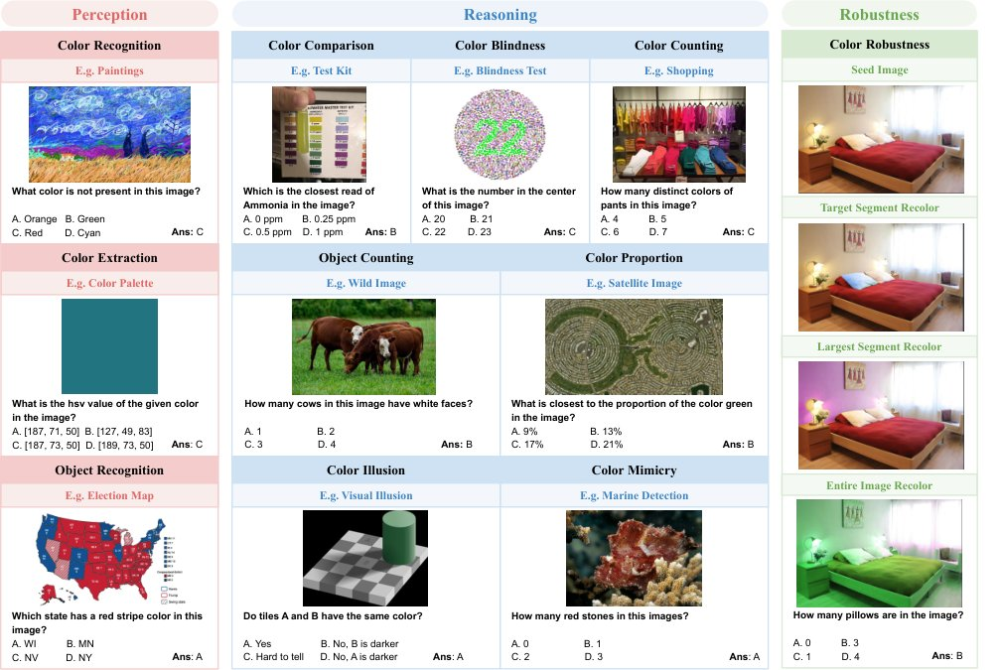
图 1：ColorBench 的测试样例。ColorBench 在三个核心能力上评测 VLM：感知、推理与鲁棒性。该基准包含 11 个任务，用于评估细粒度的颜色理解能力，以及颜色对计数、比例计算、鲁棒性估计等其他推理技能的影响。ColorBench 含 1,400 余个实例，覆盖绘画分析、检测试剂读数、购物、卫星与野生动物影像分析等广泛的真实应用场景。
However, existing benchmarks for VLMs mainly focus on tasks that may not heavily depend on color understanding or require color-centric reasoning, thereby overlooking nuanced color-related factors [25, 29]. Hence, there is a lack of benchmarks that systematically assess how well VLMs understand color when it serves as the main or distinguishing feature of a scene and key information to a task. Moreover, robustness to variations in color, such as recoloring and shifting hues, has also been largely neglected in the LLM era [6, 8, 20]. Consequently, it remains unclear whether VLMs can perceive and reason about color with human-like proficiency and to what extent their performance deteriorates under significant color perturbations. This shortfall underscores the need for a dedicated benchmark that comprehensively probes various facets of color comprehension in VLMs. A detailed discussion of related works is provided in Appendix A.
然而，现有的 VLM 基准主要聚焦于那些不太依赖颜色理解、或不需要以颜色为中心的推理的任务，因而忽略了与颜色相关的细微因素 [25, 29]。因此，当颜色构成场景的主要或区分性特征、以及任务的关键信息时，目前仍缺乏系统评估 VLM 颜色理解能力的基准。此外，对颜色变化（如重着色与色相偏移）的鲁棒性，在大语言模型时代也大体被忽视 [6, 8, 20]。其结果是，我们仍不清楚 VLM 能否以接近人类的水平感知并推理颜色，也不清楚在显著的颜色扰动下其性能会退化到何种程度。这一缺口说明，需要一个专门的基准来全面探测 VLM 颜色理解的各个方面。相关工作的详细讨论见附录 A。
To bridge this gap, we propose a novel benchmark, ColorBench, that aims at comprehensively evaluating VLMs on three core capabilities of color understanding: Color Perception, Color Reasoning, and Color Robustness. Color Perception examines VLMs’ fundamental capability to correctly detect and interpret colors from inputs. Color Reasoning refers to the reasoning skills to draw further conclusions based on the understanding of colors from input and prior knowledge, in which colors act as a crucial clue to formulate accurate judgments. Color Robustness assesses how consistently VLMs perform when an image’s colors are altered, ensuring they maintain accurate predictions across different color variants of an image. Under these three core dimensions, fine-grained tasks assessing different aspects of color understanding capabilities are formulated as shown in Figure 1, which not only shows test examples in ColorBench but also presents potential real-world applications.
为弥合这一缺口，我们提出一个新颖的基准 ColorBench，旨在从颜色理解的三个核心能力——颜色感知、颜色推理与颜色鲁棒性——上全面评测 VLM。颜色感知考察 VLM 从输入中正确检测并解读颜色的基础能力。颜色推理指在对输入颜色与先验知识的理解之上作进一步推断的推理技能，其中颜色是形成准确判断的关键线索。颜色鲁棒性评估当图像颜色被改变时 VLM 表现的一致程度，确保其在同一图像的不同颜色变体上保持准确预测。在这三个核心维度之下，我们设计了 个细粒度任务，各自评估颜色理解能力的不同侧面，如图 1 所示；该图既展示了 ColorBench 中的测试样例，也呈现了潜在的真实应用场景。
By focusing on these facets, ColorBench offers a granular view of VLMs’ capabilities in color understanding, aiming to illuminate both their strengths and shortcomings. We evaluate widely used VLMs in our benchmark, ranging from open-source to proprietary models, from relatively small models (B) to larger models (B), and obtain some unrevealed observations.
通过聚焦这些侧面，ColorBench 提供了 VLM 颜色理解能力的细粒度视图，旨在同时揭示其长处与不足。我们在本基准上评测了 个广泛使用的 VLM，涵盖从开源到闭源模型、从较小的模型（B）到较大的模型（B），并得到一些此前未被揭示的观察。
Main Contribution. We introduce “ColorBench”, the first dedicated benchmark for assessing the color perception, reasoning, and robustness of VLMs. We develop an evaluation suite for 11 color-centric tasks, covering diverse application scenarios and practical challenges. Moreover, we report a fine-grained empirical evaluation of state-of-the-art VLMs, which exposes their limitations in color understanding and offers novel insights for future research. Our key findings are highlighted in the following:
主要贡献。我们提出“ColorBench”——首个专门用于评估 VLM 颜色感知、推理与鲁棒性的基准。我们开发了一套涵盖 11 个以颜色为中心的任务的评测工具，覆盖多样的应用场景与实际挑战。此外，我们报告了对 个最先进 VLM 的细粒度实证评测，揭示了它们在颜色理解上的局限，并为未来研究提供了新颖洞见。我们的关键发现如下：
The scaling law still holds for color understanding but is much weaker and mainly depends on the language model parts. The correlation between the performance and the vision encoder’s size is not significant due to the limited choices in current VLMs.
1. 缩放定律在颜色理解上依然成立，但要弱得多，且主要取决于语言模型部分。由于当前 VLM 的视觉编码器选择有限，性能与视觉编码器规模之间的相关性并不显著。
The absolute performances of different VLMs are relatively low, and the gaps between different models (open-source vs. proprietary, small vs. large) are not large, indicating the challenges of ColorBench and the negligence of color understanding in existing VLMs.
2. 不同 VLM 的绝对性能都相对较低，而模型之间的差距（开源对闭源、小模型对大模型）并不大，这既体现了 ColorBench 的难度，也说明现有 VLM 对颜色理解的忽视。
Despite the weaknesses of VLMs on color understanding, adding reasoning steps can still improve their performance on ColorBench tasks, even for color robustness, which has not been investigated by the community.
3. 尽管 VLM 在颜色理解上存在弱点，增加推理步骤仍能提升它们在 ColorBench 任务上的表现，对颜色鲁棒性亦是如此——这一点此前未被学界研究过。
Color clues are indeed leveraged more or less by VLMs in most of the tasks in ColorBench. However, in color illusion and mimicry tasks, colors might mislead VLMs to give wrong answers, and converting colorful images into grayscale can improve the accuracy.
4. 颜色线索确实或多或少被 VLM 在 ColorBench 的大多数任务中加以利用。然而在颜色错觉与颜色拟态任务中，颜色可能误导 VLM 给出错误答案，而把彩色图像转为灰度反而能提升准确率。
图 2：ColorBench 中 3 个类别与 11 个任务的统计。
We present ColorBench, the first benchmark explicitly designed to comprehensively evaluate the color understanding capabilities of VLMs across three key dimensions: Color Perception, Color Reasoning, and Color Robustness. This benchmark consists of instances and image-text questions spanning diverse tasks. For the Color Perception and Color Reasoning categories, each instance contains an image, a question, and multiple-choice ( to ) options, with only one correct answer. For Color Robustness, each instance consists of 10 multiple-choice image-text questions, including a seed image and 9 edited images with color changes. Given that color is a fundamental visual feature influencing most vision-related tasks, disentangling color understanding from other general capabilities (e.g., object recognition, counting) is challenging. To address this, we design questions with explicit color constraints for Color Perception and Reasoning dimensions, enabling a focused evaluation of VLMs’ perception and reasoning abilities in relation to color.
我们提出 ColorBench，这是首个明确设计用于从三个关键维度——颜色感知、颜色推理与颜色鲁棒性——全面评测 VLM 颜色理解能力的基准。该基准由 个实例与 道图文问题组成，跨越 个多样任务。对颜色感知与颜色推理两个类别，每个实例包含一张图像、一个问题与多项选择选项（ 到 个），且只有一个正确答案。对颜色鲁棒性，每个实例由 10 道图文选择题组成，包括一张种子图像与 9 张经过颜色改变的编辑图像。鉴于颜色是影响多数视觉相关任务的基本视觉特征，把颜色理解与其他通用能力（如物体识别、计数）解耦并非易事。为此，我们在颜色感知与推理维度上设计了带有显式颜色约束的问题，从而可以对 VLM 与颜色相关的感知与推理能力做有针对性的评测。
Motivated by the existing evaluation criteria from prior benchmarks and real-world application scenarios, we categorize the color understanding capability into core dimensions and detailed axes, as shown in Figure 1. The detailed question templates and sample cases are shown in Appendix 16.
受已有基准的评测标准与真实应用场景启发，我们把颜色理解能力划分为 个核心维度与 个细分子轴，如图 1 所示。详细的问题模板与样例见附录 16。
This core dimension refers to the fundamental capability to correctly detect and interpret colors from inputs. We assess this capability through key aspects: i) Color Recognition, ii) Color Extraction, and iii) Object Recognition.
这一核心维度指从输入中正确检测并解读颜色的基础能力。我们通过 个关键方面评估该能力：i）颜色识别，ii）颜色提取，iii）物体识别。
Color Recognition includes questions that either ask for the color of a given object or determine whether a specific color is present in the image. Color Extraction requires the model to extract the value of color code (e.g., RGB, HSV, or HEX) for a given single color image. This task measures the ability to perform fine-grained color retrieval from visual input. Object Recognition evaluates the model’s capability to identify objects that match a specified color described in the text input. These two tasks require VLMs to be able to detect and interpret the color in either the image or text input.
颜色识别包含两类问题：询问给定物体的颜色，或判断图像中是否存在某种特定颜色。颜色提取要求模型为给定的纯色图像提取颜色码（如 RGB、HSV 或 HEX）的取值。该任务度量从视觉输入中做细粒度颜色检索的能力。物体识别评估模型依据文本输入中描述的指定颜色识别对应物体的能力。这三个任务要求 VLM 能够检测并解读图像或文本输入中的颜色。
This dimension refers to the reasoning skills to draw further conclusions based on the understanding of colors from input and prior knowledge, in which colors act as a crucial clue to formulate accurate judgments. This category encapsulates key aspects: i) Color Proportion, ii) Color Comparison, iii) Color Counting, iv) Object Counting, v) Color Illusion, vi) Color Mimicry and vii) Color Blindness.
这一维度指在对输入颜色与先验知识的理解之上作进一步推断的推理技能，其中颜色是形成准确判断的关键线索。该类别包含 个关键方面：i）颜色占比，ii）颜色比较，iii）颜色计数，iv）物体计数，v）颜色错觉，vi）颜色拟态，vii）色盲。
Color Proportion tests the model’s capability to estimate the relative area occupied by a specific color. Questions in this task require both color perception and proportion calculation capabilities. Color Comparison requires the model to be able to distinguish among multiple colors in the image, assessing its sensitivity to hue, saturation, and brightness differences in visual input. Color Counting focuses on identifying the number of unique colors in the image, evaluating the model’s perception and differentiation of distinct color variations, and counting ability. Object Counting extends this challenge by requiring the model to count objects that match a specific color pattern. This task requires an integration of object recognition and color perception. Color Illusion questions query VLMs to compare colors in potential illusionary environments. This task evaluates the model’s ability to account for color-induced optical illusions. Color Mimicry challenges the model to detect objects camouflaged within their surroundings, where color serves as a misleading factor, requiring advanced pattern recognition and contextual reasoning. These two tasks both assess the model’s ability to make correct predictions under the misleading of color-related information in visual input. Color Blindness, inspired by Ishihara tests, assesses the model’s ability to recognize numbers or text embedded in color patterns, testing its understanding of shape-color relationships. These tasks comprehensively assess the model’s capacity for logical reasoning, spatial awareness, and adaptive interpretation of color-based visual cues.
颜色占比检验模型估计某一特定颜色所占相对面积的能力，该类问题同时要求颜色感知与比例计算能力。颜色比较要求模型区分图像中的多种颜色，评估其对视觉输入中色相、饱和度与明度差异的敏感度。颜色计数关注识别图像中不同颜色的数量，评估模型对不同颜色变化的感知与区分能力以及计数能力。物体计数在此之上进一步加码，要求模型统计符合特定颜色模式的物体，需要把物体识别与颜色感知结合起来。颜色错觉问题要求 VLM 在潜在的错觉环境中比较颜色，评估模型考虑由颜色引起的光学错觉的能力。颜色拟态要求模型检测与周围环境融为一体的伪装物体，其中颜色充当误导因素，需要高级的模式识别与语境推理。这两个任务都评估模型在视觉输入中颜色相关信息误导下做出正确预测的能力。色盲任务受石原测试启发，评估模型识别嵌入在色块图案中的数字或文字的能力，检验其对形状—颜色关系的理解。这 个任务全面评估模型在逻辑推理、空间意识以及对基于颜色的视觉线索作适应性解读方面的能力。
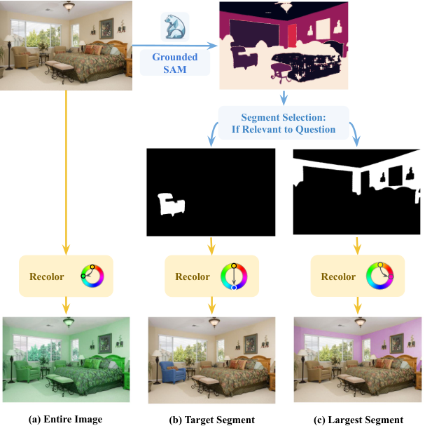
图 3：颜色鲁棒性的生成流程。对每张种子图像，我们施加 种重着色策略（整幅图像、目标分割区域、最大分割区域）以生成编辑后的图像。对每种策略，我们通过在 HSV 色彩空间中把色相值偏移 °、° 或 ° 来改变重着色区域的颜色。
Color Robustness assesses how consistently VLMs perform and whether they can consistently deliver accurate predictions under color variants of a given image. It involves measuring the stability of a VLM’s responses when confronted with the same text input and a series of recolored images. To ensure that color does not influence the predictions, we select questions and corresponding answers that are independent of color attributes. Under these conditions, a robust model should produce unchanged predictions regardless of recoloring manipulation. Any variation in the model’s responses is then used to quantify its susceptibility to color changes, providing a direct measure of robustness.
颜色鲁棒性评估 VLM 表现的一致程度，即在同一给定图像的颜色变体下能否持续给出准确预测。它度量的是：当面对相同的文本输入与一系列重着色图像时，VLM 回答的稳定程度。为确保颜色不影响预测，我们选取与颜色属性无关的问题及对应答案。在此条件下，一个鲁棒的模型无论施加何种重着色操作，都应给出不变的预测。模型回答中的任何变化，则被用来量化其对颜色变化的敏感程度，从而直接度量鲁棒性。
For most of the tasks in the category of Color Perception and Color Reasoning, we rely on human experts to manually collect images from multiple online benchmarks and websites. For the Color Proportion task, to ensure the correctness of the ground truth, an extra color extraction tool is firstly utilized to obtain the color histogram of the image. Questions and options are then manually designed based on these color statistics. For tasks including Color Extraction, Color Blindness, and Color Illusion, testing images are generated by corresponding code programs to ensure the controllability of the questions and answers. The detailed data sources are shown in Appendix B.
对颜色感知与颜色推理类别中的多数任务，我们依靠人工专家从多个在线基准与网站手工收集图像。对颜色占比任务，为保证真值的正确性，我们首先用一个额外的颜色提取工具获取图像的颜色直方图，再依据这些颜色统计手工设计问题与选项。对颜色提取、色盲与颜色错觉等任务，测试图像由相应的代码程序生成，以确保问题与答案的可控性。详细的数据来源见附录 B。
After the initial data is collected, additional filtering processes are conducted in a human-machine interactive process. We first conduct inference on a variety of VLMs and discard low-quality samples based on the GPT-4o prediction result and human evaluation. For synthesized data, similar processes are conducted, but with additional code (for generation) and image assessment. The above process is conducted in three rounds before the final benchmark instances are settled. This refinement process ensures ColorBench a rigorous and informative benchmark for assessing color-related understanding.
初始数据收集完成后，我们在人机交互流程中开展额外的过滤处理。我们首先在多种 VLM 上做推理，并依据 GPT-4o 的预测结果与人工评估剔除低质量样本。对合成数据，我们执行相似流程，但额外增加（用于生成的）代码检查与图像评估。上述过程共进行三轮，才最终确定基准实例。这一精炼过程确保了 ColorBench 成为评估颜色相关理解的严谨而富有信息量的基准。
For Color Robustness, we create evaluation instances by modifying images or specific regions through color changes. We define recoloring strategies to determine the recoloring region: i) Entire Image, where the whole image is recolored; ii) Target Segment, where only the segment relevant to the question is altered; and iii) Largest Segment, where the largest region unrelated to the question is modified. Further details can be found in Appendix C. While generating color variants, we derive seed images from CV-Bench [42], a publicly available benchmark. For each seed image, as shown in Figure 3, we first employ a Grounded Segmentation Model (GAM) [38] to extract segments and their corresponding labels. We then apply the predefined recoloring strategies to determine the editing region and perform recoloring by shifting the Hue value in the HSV color space at three levels to cover entire color wheel: (°, °, and °). This process produces variations per seed image, covering different strategies and degrees of color change to enable a comprehensive robustness assessment. To ensure interpretability, human experts filter out unnatural or negligible modifications, resulting in a final selection of seed images for robustness evaluation.
对颜色鲁棒性，我们通过改变图像或特定区域的颜色来构造评测实例。我们定义 种重着色策略以确定重着色区域：i）整幅图像，即整张图像被重着色；ii）目标分割区域，即只改变与问题相关的分割区域；iii）最大分割区域，即修改与问题无关的最大区域。更多细节见附录 C。在生成颜色变体时，我们从公开基准 CV-Bench [42] 中取材种子图像。对每张种子图像，如图 3 所示，我们首先采用 Grounded Segmentation Model（GAM）[38] 提取分割区域及其对应标签，随后施加预定义的重着色策略确定编辑区域，并在 HSV 色彩空间中按三个层级偏移色相值以完成重着色，从而覆盖整个色环：（°、° 与 °）。这一过程为每张种子图像产生 个变体，覆盖不同策略与不同程度的颜色改变，以支持全面的鲁棒性评估。为保证可解释性，人工专家会滤除不自然或可忽略的修改，最终选出 张种子图像用于鲁棒性评测。
For Perception and Reasoning, we use accuracy as the evaluation metric, as all tasks follow a multiple-choice format. Accuracy is computed per task and per category, representing the proportion of correctly answered questions.
对感知与推理，由于所有任务都采用多项选择形式，我们使用准确率作为评测指标。准确率按任务与按类别分别计算，表示被正确回答的问题所占比例。
For Robustness, we evaluate a model’s ability to maintain consistent accurate predictions under color variations. As detailed in Section 2.2, each seed image is transformed into recolored variants using recoloring strategies, while keeping the original question unchanged. A model is considered robust on a seed image and corresponding question if and only if it provides a correct prediction for and maintains correct on all recolored versions. To quantify robustness, we define the instance-level robustness metric and a model-level robustness metric .
对鲁棒性，我们评估模型在颜色变化下保持一致准确预测的能力。如第 2.2 节所述，每张种子图像 会通过重着色策略被转换为 个重着色变体，而原始问题 保持不变。当且仅当模型 在种子图像 与对应问题 上对 给出正确预测、并在全部 个重着色版本上保持正确时，我们才认为它是鲁棒的。为量化鲁棒性，我们定义实例级鲁棒性指标 与模型级鲁棒性指标 。
Instance-level Robustness. Let the recolored images be and the generation output of model for image and question is . Define as the model correctness: if model result is correct, otherwise . The instance-level robustness metric for a seed image and question is defined as:
实例级鲁棒性。设重着色后的图像为 ，模型对图像 与问题 的生成输出为 。定义 为模型的正确性： 表示模型结果 正确，否则取 。实例级鲁棒性指标 ——针对种子图像 与问题 ——定义为：
| (1) |
Overall Robustness. Let be the set of seed images. We define model robustness to be:
整体鲁棒性。设 为种子图像的集合。我们把模型鲁棒性定义为：
| (2) |
represents the proportion of seed images on which the model maintains correctness across all color variations. A model is more robust when is higher.
表示模型在全部颜色变化下都保持正确的种子图像所占比例。 越高，模型越鲁棒。
表 1： 个 VLM（按规模分组）与人类在 ColorBench 上的表现。模型在各组内按其在颜色感知与推理（P & R Overall）任务上的总体表现排序。人工评测中剔除了颜色提取任务，因为人对精确颜色码的差异并不敏感。每个 VLM 组内的最佳表现以粗体标出。人工评测中，任何超过全部 VLM 的实例以粗体标出。
| Color Perception | Color Reasoning | P & R | Robustness | |||||||||
| C’Recog | C’Extract | O’Recog | C’Prop | C’Comp | C’Count | O’Count | C’Illu | C’Mimic | C’Blind | Overall | C’Robust | |
| VLMs: 7B | ||||||||||||
| LLaVA-OV-0.5B | 26.3 | 44.8 | 46.8 | 30.0 | 23.8 | 22.6 | 21.4 | 38.7 | 58.6 | 26.8 | 32.6 | 38.7 |
| InternVL2-1B | 35.5 | 34.4 | 59.7 | 23.8 | 41.6 | 19.6 | 22.3 | 34.4 | 38.6 | 33.1 | 33.6 | 39.4 |
| InternVL2-2B | 60.5 | 36.5 | 66.2 | 40.0 | 38.6 | 19.6 | 29.1 | 26.9 | 52.9 | 21.0 | 36.4 | 54.2 |
| InternVL2.5-1B | 55.3 | 36.5 | 61.0 | 42.5 | 45.5 | 22.6 | 25.2 | 43.0 | 41.4 | 28.0 | 38.3 | 52.3 |
| InternVL2.5-2B | 69.7 | 28.1 | 71.4 | 33.8 | 48.5 | 25.5 | 30.1 | 32.3 | 55.7 | 19.8 | 38.5 | 59.8 |
| Qwen2.5-VL-3B | 72.4 | 38.5 | 74.0 | 43.8 | 48.5 | 22.6 | 25.2 | 43.0 | 45.7 | 24.2 | 41.1 | 63.7 |
| Cambrian-3B | 67.1 | 31.3 | 66.2 | 47.5 | 50.5 | 25.5 | 29.1 | 44.1 | 61.4 | 22.3 | 41.5 | 59.0 |
| VLMs: 7B 8B | ||||||||||||
| LLaVA-Next-v-7B | 29.0 | 38.5 | 57.1 | 21.3 | 34.7 | 23.5 | 25.2 | 38.7 | 41.4 | 17.8 | 31.2 | 52.1 |
| LLaVA-Next-m-7B | 21.1 | 18.8 | 63.6 | 27.5 | 42.6 | 16.7 | 34.0 | 41.9 | 47.1 | 29.9 | 33.4 | 55.2 |
| Eagle-X5-7B | 52.6 | 47.9 | 67.5 | 41.3 | 42.6 | 20.6 | 35.0 | 44.1 | 48.6 | 22.9 | 40.0 | 48.5 |
| Cambrian-8B | 72.4 | 28.1 | 72.7 | 48.8 | 54.5 | 31.4 | 33.0 | 41.9 | 57.1 | 17.2 | 42.3 | 64.9 |
| InternVL2-8B | 72.4 | 50.0 | 77.9 | 42.5 | 48.5 | 20.6 | 35.9 | 38.7 | 50.0 | 23.6 | 43.1 | 65.5 |
| Eagle-X4-8B | 71.1 | 47.9 | 68.8 | 45.0 | 50.5 | 26.5 | 37.9 | 40.9 | 48.6 | 27.4 | 44.1 | 63.7 |
| LLaVA-OV-7B | 71.1 | 53.1 | 81.8 | 52.5 | 53.5 | 19.6 | 26.2 | 48.4 | 48.6 | 23.6 | 44.7 | 74.0 |
| InternVL2.5-8B | 77.6 | 47.9 | 83.1 | 50.0 | 62.4 | 25.5 | 33.0 | 34.4 | 52.9 | 19.8 | 45.2 | 69.8 |
| Qwen2.5-VL-7B | 76.3 | 49.0 | 84.4 | 47.5 | 52.5 | 19.6 | 34.0 | 44.1 | 55.7 | 28.7 | 46.2 | 74.4 |
| VLMs: 10B 30B | ||||||||||||
| LLaVA-Next-13B | 56.6 | 31.3 | 71.4 | 27.5 | 41.6 | 27.5 | 28.2 | 29.0 | 45.7 | 25.5 | 36.4 | 53.3 |
| Cambrian-13B | 67.1 | 34.4 | 74.0 | 46.3 | 47.5 | 32.4 | 35.0 | 38.7 | 55.7 | 24.8 | 42.8 | 64.7 |
| Eagle-X4-13B | 73.7 | 43.8 | 76.6 | 43.8 | 47.5 | 23.5 | 38.8 | 34.4 | 57.1 | 26.1 | 43.7 | 66.3 |
| InternVL2-26B | 72.4 | 52.1 | 87.0 | 52.5 | 56.4 | 20.6 | 35.0 | 34.4 | 55.7 | 27.4 | 46.3 | 74.0 |
| InternVL2.5-26B | 72.4 | 45.8 | 89.6 | 45.0 | 63.4 | 22.6 | 35.0 | 32.3 | 62.9 | 29.3 | 46.8 | 83.0 |
| VLMs: 30B 70B | ||||||||||||
| Eagle-X5-34B | 79.0 | 27.1 | 80.5 | 48.8 | 48.5 | 23.5 | 35.9 | 37.6 | 60.0 | 25.5 | 43.4 | 67.1 |
| Cambrian-34b | 75.0 | 57.3 | 77.9 | 50.0 | 46.5 | 22.6 | 32.0 | 37.6 | 64.3 | 24.2 | 45.3 | 67.7 |
| InternVL2-40B | 72.4 | 52.1 | 83.1 | 51.3 | 61.4 | 19.6 | 35.9 | 34.4 | 58.6 | 21.0 | 45.6 | 78.7 |
| LLaVA-Next-34b | 69.7 | 46.9 | 76.6 | 43.8 | 56.4 | 28.4 | 41.8 | 36.6 | 61.4 | 29.9 | 46.6 | 65.9 |
| InternVL2.5-38B | 71.1 | 60.4 | 89.6 | 53.8 | 63.4 | 29.4 | 40.8 | 34.4 | 61.4 | 26.8 | 50.0 | 84.6 |
| VLMs: 70B | ||||||||||||
| InternVL2-76B | 72.4 | 42.7 | 85.7 | 45.0 | 62.4 | 27.5 | 35.0 | 31.2 | 50.0 | 23.6 | 44.6 | 68.6 |
| LLaVA-Next-72B | 72.4 | 54.2 | 79.2 | 41.3 | 49.5 | 24.5 | 35.9 | 33.3 | 48.6 | 34.4 | 45.2 | 66.5 |
| InternVL2.5-78B | 75.0 | 58.3 | 81.8 | 43.8 | 68.3 | 27.5 | 36.9 | 34.4 | 61.4 | 28.7 | 48.8 | 86.2 |
| LLaVA-OV-72B | 73.7 | 63.5 | 83.1 | 52.5 | 69.3 | 27.5 | 50.5 | 36.6 | 55.7 | 31.9 | 51.9 | 80.3 |
| VLMs: Proprietary | ||||||||||||
| GPT-4o | 76.3 | 40.6 | 80.5 | 38.3 | 66.3 | 30.4 | 29.1 | 50.5 | 70.0 | 58.6 | 52.9 | 46.2 |
| Gemini-2-flash | 80.3 | 52.1 | 87.0 | 46.9 | 70.3 | 33.3 | 34.9 | 44.1 | 72.9 | 49.6 | 55.4 | 70.7 |
| GPT-4o (CoT) | 77.6 | 55.2 | 83.1 | 44.4 | 71.3 | 26.5 | 33.0 | 44.1 | 77.1 | 66.8 | 57.4 | 69.9 |
| Gemini-2-flash (CoT) | 82.9 | 56.2 | 88.3 | 58.0 | 68.3 | 43.1 | 38.8 | 40.9 | 75.7 | 60.0 | 59.6 | 73.6 |
| Human Evaluation | ||||||||||||
| Human Evaluation | 92.0 | - | 90.1 | 59.6 | 79.8 | 62.0 | 81.3 | 63.0 | 83.8 | 94.0 | - | - |
Table 1 presents the performances of a wide range of VLMs, along with human evaluation results on our ColorBench. Human participants achieve the highest performance on all evaluated tasks across all models. Among the models, overall accuracy generally increases with model size, with larger models tend to outperform smaller models, and the two proprietary models, GPT-4o and Gemini-2-flash, perform the best11 1 To examine the upper limits of VLM capabilities and benchmark against human-level performance, we also assess performance GPT-o3 on perception and reasoning tasks. The result is shown in Appendix H..
表 1 给出各类 VLM 的表现，以及在我们的 ColorBench 上的人工评测结果。人类参与者在所有模型、所有被评测任务上取得最高表现。在模型之间，总体准确率大体随模型规模上升，较大的模型往往优于较小的模型；两个闭源模型 GPT-4o 与 Gemini-2-flash 表现最好。11 1 为检验 VLM 能力的上限并与人类水平对标，我们还在感知与推理任务上评测了 GPT-o3 的表现，结果见附录 H。
Color Perception. In Color Recognition (C’Recog), most models perform well (above ), indicating that this task is relatively basic for color perception. Gemini-2 with CoT obtains the highest performance. In Color Extraction (C’Extra), to our surprise, the two powerful proprietary models without CoT prompting only reach the middle-tier performances, indicating the potential limitation on the color perception of their vision encoders. Similar to the Color Existence task, almost all the models perform well in Object Recognition (O’Recog), and the 2 proprietary models do not reach the top. This is probably due to the strong alignment between this task and the common training recipe, which includes abundant general object detection images.
颜色感知。在颜色识别（C'Recog）上，多数模型表现良好（高于 ），说明该任务对颜色感知而言相对基础。带 CoT 的 Gemini-2 取得最高表现。在颜色提取（C'Extra）上，出乎我们意料的是，两个强大的闭源模型在不使用 CoT 提示时只达到中游水平，说明其视觉编码器在颜色感知上可能存在局限。与颜色存在性任务类似，几乎所有模型在物体识别（O'Recog）上都表现良好，而两个闭源模型并未登顶。这可能是因为该任务与常见的训练配方高度契合——后者包含大量通用目标检测图像。
Color Reasoning. In Color Proportion (C’Prop), even the best model, Gemini-2 with CoT, can only reach of the accuracy, which is almost only slightly better than random guessing, showcasing the supreme difficulty of this task. In Color Comparison (C’Comp), larger models perform better in this task, and the proprietary models with CoT reach the top performance unsurprisingly. Surprisingly, in Color Counting (C’Count), all models show extremely poor performances. The highest performance comes from Gemini-2 with CoT, exceeding the second place by percent, although its performance is also unsatisfactory at only . In Object Counting (O’Count), surpassing the 2 proprietary models, LLaVA-OV-72B reaches the top and becomes the only model that exceeds of the accuracy. Similar to the findings from the Object Recognition task, this might be caused by the extremely adequate object detection tasks in open-sourced training recipes. In Color Illusion (C’Illu), the accuracies of most models lie in the range of to , and GPT-4o without CoT is the only one that exceeds of the accuracy. In Color Mimicry (C’Mimic), the 2 proprietary models reach the top, while more reasoning steps do not benefit a lot. In Color Blindness (C’Blind), most of the open-sourced models present accuracies under . Considering the extremely practical usage of this scenario, we think the current community should pay more attention to this. Moreover, we also observe that, surprisingly, more reasoning steps benefit VLMs in the color blindness test, although it seems like a pure color perception task.
颜色推理。在颜色占比（C'Prop）上，即便是最好的模型——带 CoT 的 Gemini-2——也只能达到 的准确率，几乎只是略好于随机猜测，显示出该任务的极高难度。在颜色比较（C'Comp）上，较大的模型表现更好，带 CoT 的闭源模型毫无意外地达到最高表现。令人意外的是，在颜色计数（C'Count）上，所有模型的表现都极差。最高表现来自带 CoT 的 Gemini-2，比第二名高出 个百分点，尽管其 的成绩同样不尽如人意。在物体计数（O'Count）上，LLaVA-OV-72B 超越两个闭源模型登顶，成为唯一准确率超过 的模型。与物体识别任务的发现类似，这可能源于开源训练配方中极为充足的目标检测任务。在颜色错觉（C'Illu）上，多数模型的准确率落在 到 之间，不带 CoT 的 GPT-4o 是唯一准确率超过 的模型。在颜色拟态（C'Mimic）上，两个闭源模型位居前列，而更多推理步骤带来的收益有限。在色盲（C'Blind）上，多数开源模型的准确率低于 。考虑到这一场景极高的实用价值，我们认为当前学界应给予更多关注。此外，我们还观察到一个意外现象：更多的推理步骤能在色盲测试中帮助 VLM，尽管它看起来像是一个纯粹的颜色感知任务。
Color Robustness. In Color Robustness (C’Robust), a higher value represents better robustness towards color alteration. The only models that exceed are LLaVA-OV-72B, InternVL2.5-26B, InternVL2.5-38B, and InternVL2.5-78B, which utilize relatively larger vision encoders, InternViT-6B, compared with others (mostly only 300-400M). In the meantime, GPT-4o has a really low robustness () to colors, indicating its vulnerable sensitivity to color changes, while Gemini-2 shows promising robustness () towards colors. Moreover, another surprising observation is that even though only the colors are changed and all the original queries are kept, utilizing more reasoning steps can consistently improve robustness for GPT-4o () and Gemini-2 ().
颜色鲁棒性。在颜色鲁棒性（C'Robust）上，取值越高表示对颜色改变的鲁棒性越好。仅有的 个超过 的模型是 LLaVA-OV-72B、InternVL2.5-26B、InternVL2.5-38B 与 InternVL2.5-78B，它们使用了相对更大的视觉编码器 InternViT-6B，而其他模型大多只有 300–400M。与此同时，GPT-4o 对颜色的鲁棒性相当低（），说明它对颜色变化极为敏感；而 Gemini-2 表现出可观的鲁棒性（）。此外，另一个令人意外的观察是：即便只改变了颜色、且所有原始问题保持不变，使用更多推理步骤仍能持续提升 GPT-4o（）与 Gemini-2（）的鲁棒性。
表 2：VLM 表现与模型各部分规模之间的 Spearman 秩相关。L 表示语言模型部分的规模，V 表示视觉编码器部分的规模。我们用“(*)”标记 p 值 的相关性。结果表明缩放定律在颜色理解上依然成立，但弱得多。
| Color Perception | Color Reasoning | P & R | Color Robustness | |||||||||
| C’Recog | C’Extract | O’Recog | C’Prop | C’Comp | C’Count | O’Count | C’Illu | C’Mimic | C’Blind | Overall | C’Robust | |
| LV | 0.5657 (*) | 0.5255 (*) | 0.7107 (*) | 0.5125 (*) | 0.6358 (*) | 0.4316 (*) | 0.7566 (*) | -0.3460 | 0.4832 (*) | 0.2460 | 0.7619 (*) | 0.7386 (*) |
| L | 0.5724 (*) | 0.4937 (*) | 0.6769 (*) | 0.4696 (*) | 0.6118 (*) | 0.4408 (*) | 0.7611 (*) | -0.3697 (*) | 0.4559 (*) | 0.2824 | 0.7436 (*) | 0.7123 (*) |
| V | 0.3955 (*) | 0.2856 | 0.5465 (*) | 0.6242 (*) | 0.5295 (*) | 0.2089 | 0.3608 | -0.0127 | 0.6024 (*) | -0.0679 | 0.5271 (*) | 0.5623 (*) |
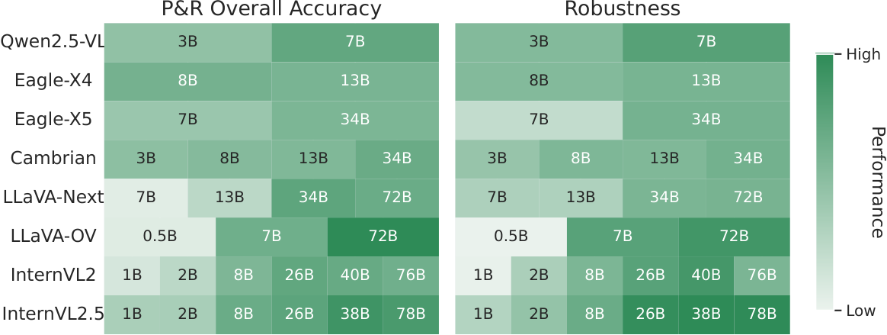
图 4：与表现和 VLM 规模相关的热图。颜色越深表示 P&R 总体准确率或鲁棒性越高。每条线代表一个模型系列，规模由小到大。该可视化清楚展现了表现与模型规模之间的相关性：模型越大，表现越好。
Since color-related tasks often involve abstract reasoning, language comprehension, and contextual interpretation, it is essential to assess not just the vision encoder but also part of the language model, which plays a critical role in processing and understanding such tasks. To quantitatively analyze the correlation between VLM performances on color understanding tasks and their sizes, Spearman’s rank correlation is calculated between VLM performances and (i) overall model sizes (L V), (ii) language model sizes (L), and (iii) vision encoder sizes (V). The correlation values and p-signs are presented in Table 2; a star is notated when the p-value of the correlation is lower than . It is observed that between the performances and language model sizes, most of the tasks have a correlation greater than and a p-value smaller than , except for Color Illusion and Color Blindness due to their special characteristics. Since the correlation between overall model sizes (L V) and P&R Overall (), and Robustness (), we conclude that the color understanding, including Color Perception, Color Reasoning, and Color Robustness, still follows the scaling law of model sizes. Figure 4 presents the correlations between performances and model sizes in each model family. This visualization clearly shows the correlation between performances and model sizes; a larger model leads to higher performance within each model family.
由于与颜色相关的任务往往涉及抽象推理、语言理解与语境解读，除视觉编码器外，评估语言模型部分同样重要——后者在处理与理解此类任务上扮演着关键角色。为定量分析 VLM 在颜色理解任务上的表现与其规模之间的相关性，我们计算了表现与（i）整体模型规模（L V）、（ii）语言模型规模（L）、（iii）视觉编码器规模（V）之间的 Spearman 秩相关。相关值与 p 值标记见表 2；当相关的 p 值低于 时标注星号。我们观察到，除颜色错觉与色盲因其特殊性之外，多数任务上表现与语言模型规模之间的相关性大于 、且 p 值小于 。鉴于整体模型规模（L V）与 P&R 总体（）、鲁棒性（）之间的相关性，我们得出结论：颜色理解——包括颜色感知、颜色推理与颜色鲁棒性——依然遵循模型规模的缩放定律。图 4 给出各模型系列中表现与模型规模之间的相关性。该可视化清楚展现出表现与模型规模的相关性；在每个模型系列内部，模型越大表现越好。
However, between the performances and vision encoder sizes, most of the tasks either have a correlation lower than or a p-value greater than , which is not sufficient to conclude with the evident positive correlation. Despite these findings, we try to avoid conveying the message that there is no positive correlation between performances and vision encoder sizes. We think it is because of the negligence of the current community to focus on the scaling laws of vision encoders. The vision encoders used in the current mainstream VLMs are constrained in a very small set: (i) most of the VLMs only use one type of vision encoders for the whole family, except for the InternVL2 and InternVL2.5 series; (ii) most of the VLMs use the vision encoder with the size of - M. These challenges make it hard to evaluate the scaling laws of vision encoders. Further visualizations are presented in Appendix L.2.
然而，在表现与视觉编码器规模之间，多数任务要么相关性低于 ，要么 p 值大于 ，不足以得出明显的正相关结论。尽管如此，我们仍希望避免传达“表现与视觉编码器规模之间不存在正相关”这一信息。我们认为，原因在于当前学界对视觉编码器缩放定律关注不足：当前主流 VLM 所使用的视觉编码器被局限在一个很小的集合内——（i）除 InternVL2 与 InternVL2.5 系列外，多数 VLM 整个系列只使用一种视觉编码器；（ii）多数 VLM 使用的视觉编码器规模为 –M。这些困难使视觉编码器缩放定律难以评估。更多可视化见附录 L.2。
表 3：各组内的最佳模型及其表现（P&R 准确率与鲁棒性）。不同 VLM 在 ColorBench 上的绝对性能相对较低，模型之间的性能差距并不大。
| Color P & R Overall | Color Robustness | |||
| Model Size | Model | Best | Model | Best |
| 7B | Cambrian-3B | 41.5 | Qwen2.5-VL-3B | 63.7 |
| 7B–8B | Qwen2.5-VL-7B | 46.2 | Qwen2.5-VL-7B | 74.4 |
| 10B–30B | InternVL2.5-26B | 46.8 | InternVL2.5-26B | 83.0 |
| 30B–50B | InternVL2.5-38B | 50.0 | InternVL2.5-38B | 84.6 |
| 70B | LLava-OV-72B | 51.9 | InternVL2.5-78B | 86.2 |
| Proprietary | Gemini-2 | 55.4 | Gemini-2 | 70.7 |
| Proprietary | Gemini-2 (CoT) | 59.6 | Gemini-2 (CoT) | 73.6 |
As shown in Table 3, we separate all the VLMs into several groups based on their sizes and present the best accuracy and the model name within each group. We can see that even the powerful proprietary models, GPT-4o and Gemini-2, can only reach an overall color perception and reasoning (P & R Overall) accuracy of , only better than the best open-sourced model. Task-level results in Table 1 further reveal that these advanced proprietary models still exhibit substantial performance gaps compared to humans across most tasks. Moreover, the best model from group 1 has the accuracy of (Cambrian-3B), which is only lower than the best open-sourced model. As for the robustness, the powerful proprietary models even show weaker robustness than the 7B model. Considering the lack of existing benchmarks specifically evaluating VLMs’ color understanding capabilities, we conclude that this area is long-neglected by the community, and the open-sourced community is still on the same page with the proprietary model providers.
如表 3 所示，我们依据规模把所有 VLM 分为若干组，并给出每组内的最佳准确率与模型名称。可以看到，即便是强大的闭源模型 GPT-4o 与 Gemini-2，其颜色感知与推理总体（P & R Overall）准确率也只能达到 ，仅比最佳开源模型高出 。表 1 中的任务级结果进一步揭示，这些先进的闭源模型在多数任务上仍与人类存在显著差距。此外，第 1 组的最佳模型（Cambrian-3B）准确率为 ，仅比最佳开源模型低 。在鲁棒性方面，强大的闭源模型甚至表现出比 7B 模型更弱的鲁棒性。考虑到目前缺乏专门评测 VLM 颜色理解能力的基准，我们得出结论：这一领域长期被学界忽视，而开源社区与闭源模型提供方仍处于同一起跑线上。
表 4：增加推理步骤能提升 VLM 在 ColorBench 上的表现。思维链（CoT）提示为 GPT-4o 与 Gemini-2-flash 在所有任务上带来的准确率变化。最后一行为两个模型的平均提升。
| Color Perception | Color Reasoning | P & R | Color Robustness | |||||||||
|---|---|---|---|---|---|---|---|---|---|---|---|---|
| C’Recog | C’Extract | O’Recog | C’Prop | C’Comp | C’Count | O’Count | C’Illu | C’Mimic | C’Blind | Overall | C’Robust | |
| GPT-4o | +1.3 | +14.6 | +2.6 | +6.1 | +5.0 | –3.9 | +3.9 | –6.4 | +7.1 | +8.2 | +4.5 | +23.7 |
| Gemini-2 | +2.6 | +4.1 | +1.3 | +11.1 | –2.0 | +9.8 | +3.9 | –3.2 | +2.8 | +10.4 | +4.2 | +2.9 |
| Average | +1.95 | +9.35 | +1.95 | +8.60 | +1.50 | +2.95 | +3.9 | –4.80 | +4.95 | +9.30 | +4.35 | +13.30 |
The impact of using CoT prompting is shown in Table 4, in which we can see CoT improves the average P&R Overall accuracy across both models by , indicating that reasoning benefits these color-related tasks. Within the category of Color Perception, the improvements from CoT on Color Recognition and Object Recognition are quite limited as these tasks heavily rely on the vision encoder. Figure 59 and 60 in Appendix M illustrate that adding reasoning steps does not take effect since the initial visual perception and color identification are incorrect in the slow thinking process. However, to our surprise, we find that the Color Extraction task benefits extremely from more reasoning steps, although it seems only related to the vision encoder. After a thorough investigation, we observe that most of the current VLMs are not capable of directly extracting color values, so they need to use more reasoning steps to reach reasonable answers.
使用 CoT 提示的影响如表 4 所示，从中可见 CoT 把两个模型的 P&R 总体平均准确率提升了 ，说明推理有益于这些与颜色相关的任务。在颜色感知类别内部，CoT 对颜色识别与物体识别的提升相当有限，因为这两个任务高度依赖视觉编码器。附录 M 中的图 59 与图 60 说明：由于在慢思考过程中初始的视觉感知与颜色辨识就已出错，增加推理步骤并不奏效。然而令我们意外的是，我们发现颜色提取任务从更多推理步骤中获益极大，尽管它看起来只与视觉编码器相关。经深入考察，我们观察到当前多数 VLM 并不具备直接提取颜色值的能力，因此需要借助更多推理步骤才能得出合理答案。
Within the category of Color Reasoning, CoT benefits most of the tasks. However, in the Color Illusion task, CoT harms the model performance. After a manual investigation, we observe that more reasoning steps might cause VLMs to focus more on the misleading environments rather than directly compare the assigned colors, as shown in Figure 61. Another observation occurs in the Color Blindness task. Unlike other reasoning-related tasks, humans can read a color blindness test image with a simple glimpse without any slow thinking. This fascinating misalignment between humans and VLMs intrigues us to further investigation. We find that VLMs recognize these digits in a button-up pattern: they need to first infer that the dots in the image can form a digit before they really recognize these dots as digits.
在颜色推理类别内部，CoT 对多数任务有益。但在颜色错觉任务上，CoT 反而损害了模型表现。经人工考察，我们观察到更多的推理步骤可能使 VLM 更关注误导性环境，而非直接比较所指定的颜色，如图 61 所示。另一个观察出现在色盲任务上。与其他推理相关任务不同，人类只需一瞥便能读出一张色盲测试图，无需任何慢思考。人与 VLM 之间这一耐人寻味的错位促使我们进一步探究。我们发现，VLM 以自底向上的方式识别这些数字：它们必须先推断出图像中的点可以构成一个数字，才会真正把这些点识别为数字。
In addition, the consistent improvement of CoT on Color Robustness is also an unrevealed phenomenon. In our setting, only the colors of the image are altered, and the questions are strictly the same as the original. Thus, under this circumstance, color is the only variant, which is supposed to be more related to the capability of the vision encoder. However, counterintuitively, as shown in our experiments, more reasoning steps make the VLMs more robust to the color changes, which is probably caused by the higher confidence of correct answers after reasoning.
此外，CoT 对颜色鲁棒性的持续改善也是一个未被揭示的现象。在我们的设置中，只有图像的颜色被改变，问题与原始问题严格相同。因此在这种情形下，颜色是唯一的变量，本应更关乎视觉编码器的能力。然而与直觉相反，我们的实验显示，更多的推理步骤使 VLM 对颜色变化更加鲁棒，这可能是因为推理之后正确答案的置信度更高。
图 5：在每个 ColorBench 任务（x 轴）上，把彩色图像转为灰度所带来的准确率变化百分比（y 轴）。每个小提琴图展示所有 VLM 上的分布。百分比越高（低）表示 VLM 在该任务上越多（少）地依赖颜色线索。正值（负值）表示在灰度图像上的性能下降（提升）。颜色线索确实在多数任务中或多或少被 VLM 利用，但它们也可能误导 VLM（错觉与拟态）。
In order to examine whether VLMs really leverage color clues to handle tasks in ColorBench, experiments are conducted by converting all the original colorful images in the Color Perception and Reasoning categories into gray-scale ones, without changing the questions. Under this circumstance, the accuracies are expected to decrease dramatically as all our questions are related to colors. For quantitative analysis, we calculate the accuracy changing ratio as for each VLM on each task. This value directly represents how the original accuracy changes with a gray-scale transformation. The positive value represents that the VLM has a higher accuracy on the original colored images, indicating that it needs color clues to solve the task. Higher positive values represent higher significance of the color clues. On the contrary, if the value is negative, it means that the VLM can reach a better accuracy after the gray-scale transformation, indicating that it does not need color clues for the task, and colors might even mislead VLM’s judgment. Lower negative values represent the severe harm the color can have on the task.
为检验 VLM 是否真的利用颜色线索来处理 ColorBench 中的任务，我们把颜色感知与推理类别中全部原始彩色图像转为灰度图像，而不改变问题，然后开展实验。在这种情形下，由于我们所有的问题都与颜色相关，准确率本应大幅下降。为做定量分析，我们为每个 VLM 在每个任务上计算准确率变化比率 。该值直接反映原始准确率在灰度变换下的变化情况。正值表示 VLM 在原始彩色图像上的准确率更高，说明它需要颜色线索才能解决该任务；正值越大，颜色线索越重要。相反，若该值为负，则说明 VLM 在灰度变换后能达到更好的准确率，即它并不需要该任务的颜色线索，颜色甚至可能误导 VLM 的判断；负值越低，说明颜色对该任务的危害越严重。
The accuracy changing ratio distributions across all VLMs and tasks are presented in Figure 5 as the violin plot. As shown in the figure, for most of the tasks, the ratios of VLMs are above , indicating that VLMs indeed leverage color clues to correctly solve the tasks; removing the color directly harms the original accuracies dramatically. However, when it comes to Color Illusion and Color Mimicry, the majority of the changing ratios are below , which means that VLMs can get better accuracies when all the color information is removed. This phenomenon is reasonable as the colors on both of these two tasks are more likely serving as the misleading factors. In the meantime, for the Color Counting and Color Blindness tasks, almost half the accuracies increase and half decrease, indicating that the color clues might not be so significant in this task, thus, some of the models can find other ways to get the answer. We also investigate the correlation between accuracy changing ratios and model sizes, while no significant correlation can be concluded.
所有 VLM 与所有任务上的准确率变化比率分布以小提琴图的形式呈现在图 5 中。如图所示，对多数任务，VLM 的比率都在 以上，说明 VLM 确实利用颜色线索来正确解决任务；移除颜色会直接大幅损害原始准确率。然而到了颜色错觉与颜色拟态任务上，多数变化比率低于 ，这意味着当全部颜色信息被去除时，VLM 反而能取得更好的准确率。这一现象是合理的，因为这两个任务中的颜色更可能充当误导因素。同时，对颜色计数与色盲任务，几乎一半的准确率上升、一半下降，说明颜色线索在这些任务中可能并不那么关键，因此部分模型能找到其他途径得到答案。我们还考察了准确率变化比率与模型规模之间的相关性，但未能得出显著相关。
In this paper, we introduce ColorBench, the first benchmark designed to comprehensively evaluate the color understanding capabilities of VLMs, including Perception, Reasoning, and Robustness. After evaluating widely used VLMs on our benchmark, several undiscovered observations are revealed by us. These observations emphasize the need for more sophisticated model architectures that integrate deeper color reasoning capabilities. To ensure high-quality and reliable annotations, ColorBench relies on manual data collection, annotation, and assessment across most domains. While this guarantees consistency, it inevitably limits dataset scale, style diversity, and category coverage. As future work, we aim to develop a trustworthy automated data collection pipeline and expand ColorBench to larger-scale, more diverse tasks involving complex interplays of color with texture, shape, and spatial relationships. Furthermore, investigating the impact of different visual encoders and language models could further elucidate the pathways through which VLMs process color information.
本文提出 ColorBench——首个旨在全面评估 VLM 颜色理解能力（包括感知、推理与鲁棒性）的基准。在评测了 个广泛使用的 VLM 之后，我们揭示出若干此前未被发现的观察。这些观察凸显出需要更复杂的模型架构，以整合更深层的颜色推理能力。为保证标注的高质量与可靠性，ColorBench 在多数领域依赖人工数据采集、标注与评估。这虽然确保了连贯性，却不可避免地限制了数据集的规模、风格多样性与类别覆盖。作为未来工作，我们计划开发一套可信的自动化数据采集流程，并把 ColorBench 扩展到更大规模、更具多样性的任务，涵盖颜色与纹理、形状及空间关系之间的复杂交互。此外，研究不同视觉编码器与语言模型的影响，可进一步阐明 VLM 处理颜色信息的通路。
With the rapid advancements in Vision-Language Models (VLMs) [9], numerous benchmarks have emerged to systematically evaluate VLM capabilities across diverse dimensions [29]. These benchmarks generally fall into two categories: text-centric and vision-centric evaluations, each designed to assess distinct multimodal competencies. Text-centric benchmarks primarily measure commonsense knowledge, reasoning, and complex problem-solving capabilities, exemplified by tasks in MMMU [47] and NaturalBench [23]. Conversely, vision-centric benchmarks focus on visual perception and reasoning (MMBench [32] and MME [10]), and robustness to visual perturbations (Grit [14] and Visual Robustness [17]). Furthermore, several benchmarks have extended their scope to evaluate specialized visual tasks, such as spatial relationship comprehension (SEED-Bench [22] and MM-Vet [46]), chart and map understanding (MMSTAR [4] and MuirBench [43]), visual grounding (Flickr30k [36] and TRIG [27]) and the detection and understanding of visual hallucinations (POPE [28] and HallusionBench [13]). However, despite the extensive scope covered by existing VLM benchmarks, none currently provide an integrated evaluation that simultaneously assesses visual perception, reasoning, and robustness within a unified framework. Moreover, although certain benchmarks [32, 10] have incorporated color-related questions, these have typically addressed basic color perception and recognition, neglecting deeper assessments of reasoning and robustness associated with color understanding.
随着视觉语言模型（VLM）[9] 的迅速进步，涌现出大量基准，用以从多个维度系统评测 VLM 的能力 [29]。这些基准大体分为两类：以文本为中心的评测与以视觉为中心的评测，各自用于考察不同的多模态能力。以文本为中心的基准主要度量常识知识、推理与复杂问题解决能力，以 MMMU [47] 与 NaturalBench [23] 中的任务为代表。相反，以视觉为中心的基准关注视觉感知与推理（MMBench [32] 与 MME [10]），以及对视觉扰动的鲁棒性（Grit [14] 与 Visual Robustness [17]）。此外，若干基准还把范围扩展到专门的视觉任务，如空间关系理解（SEED-Bench [22] 与 MM-Vet [46]）、图表与地图理解（MMSTAR [4] 与 MuirBench [43]）、视觉定位（Flickr30k [36] 与 TRIG [27]），以及视觉幻觉的检测与理解（POPE [28] 与 HallusionBench [13]）。然而，尽管现有 VLM 基准覆盖的范围已相当广泛，尚无一个能在统一框架内同时评估视觉感知、推理与鲁棒性。此外，虽然某些基准 [32, 10] 已纳入与颜色相关的问题，它们通常只涉及基础的颜色感知与识别，忽略了与颜色理解相关的推理与鲁棒性的更深层评估。
Color understanding is increasingly recognized as a crucial aspect of Vision-Language Models’ ability to perceive and interpret visual content. Limited studies have explored how color information influences model performance on specific tasks. Some studies [51, 50] explore the understanding of color by replacing color-related words in textual inputs to evaluate the models’ ability to handle color-specific information. More recent research [16, 21] focuses on assessing fine-grained color discrimination by asking models to distinguish subtle color differences in visual inputs. Samin et al. [39] introduced color-related foils to test VLMs’ capacity to cognize basic colors like red, white, and green, particularly in contexts requiring attention to subtle cues. Additionally, Burapacheep et al. [3] developed a benchmark dataset to evaluate and enhance compositional color comprehension in VLMs, emphasizing tasks where understanding minimal color relationships is essential. IllusionVQA [40] evaluates model perception of color illusions in photorealistic scenes. While these works have addressed isolated aspects of color understanding, none have provided a holistic assessment framework. In contrast to these previous works, our study establishes the first comprehensive and specialized benchmark for evaluating the color-related abilities of VLMs, offering a quantitative, automated approach to further this area of research.
颜色理解正日益被视为 VLM 感知与解读视觉内容能力的关键一环。已有少量研究探讨颜色信息如何影响模型在特定任务上的表现。部分研究 [51, 50] 通过替换文本输入中与颜色相关的词，考察模型处理颜色特定信息的能力。更近期的研究 [16, 21] 关注细粒度颜色辨别，要求模型区分视觉输入中细微的颜色差异。Samin 等人 [39] 引入与颜色相关的干扰项，测试 VLM 认知红、白、绿等基础颜色的能力，尤其是在需要注意细微线索的语境下。此外，Burapacheep 等人 [3] 构建了一个基准数据集，用于评测并增强 VLM 的组合式颜色理解，强调那些必须理解最小颜色关系的任务。IllusionVQA [40] 评估模型对照片级真实场景中颜色错觉的感知。尽管这些工作触及了颜色理解的孤立侧面，却没有提供一个整体性的评估框架。与这些前人工作不同，我们的研究建立了首个全面而专门的基准，用于评估 VLM 与颜色相关的能力，并提供一种定量、自动化的方法来推进这一领域的研究。
We conduct ColorBench from multiple sources, including website sources, publicly available benchmarks, and generated images. The detailed sources are included in Table 5.
我们从多个来源构建 ColorBench，包括网站来源、公开可用基准与生成的图像。详细来源见表 5。
表 5：各任务的数据来源。
| Category | Data Source |
|---|---|
| C’Recognition | Website, ICAA17K [15] |
| C’Recognition | Website, ICAA17K [15] |
| C’Extraction | Synthetic Data |
| C’Proportion | Website, Synthetic Data |
| C’Comparison | Website |
| C’Counting | Website, Synthetic Data |
| C’Ounting | Website, ADA20K [52, 53], COCO2017 [30] |
| C’Mimicry | Website, IllusionVQA[40], RCID[33] |
| C’Blindness | Synthetic Data |
| C’Robust | CV-Bench[42] |
For the Color Robustness, we evaluate the consistency of VLMs when faced with instances that differ only in the color of the visual input. To systematically assess this effect, we define recoloring strategies that determine which part of the image is altered: i) Target Segment, ii) Largest Segment, and iii) Entire Image. As mentioned in Table 6, Target Segment strategy recolors only the segment containing the object referenced in the question. This strategy ensures that the modification directly affects the model’s perception of task-relevant content. Largest Segment strategy alters the color of the largest segment that is irrelevant to the question, testing whether models are distracted by dominant but unrelated visual changes. In contrast, Entire Image strategy applies a global color shift to evaluate the model’s sensitivity to overall color variations. As summarized in Table 6, the first two strategies introduce localized modifications, while the third assesses robustness to broader image-wide color changes. Importantly, only color attributes are altered without modifying object shapes or contextual elements, which preserves the overall realism of the image. By incorporating both task-relevant and irrelevant edits, our benchmark provides a comprehensive evaluation of VLMs’ ability to handle color perturbations across different contexts.
对颜色鲁棒性，我们评估 VLM 在面对仅在视觉输入颜色上有所不同的实例时的连贯性。为系统评估这一效应，我们定义 种重着色策略，用以决定图像被改变的部位：i）目标分割区域，ii）最大分割区域，iii）整幅图像。如表 6 所述，目标分割区域策略只对包含问题所提及物体的分割区域重着色。该策略确保修改直接作用于模型对任务相关内容的感知。最大分割区域策略改变与问题无关的最大分割区域的颜色，检验模型是否会被显著但无关的视觉变化所干扰。相反，整幅图像策略施加全局颜色偏移，以评估模型对整体颜色变化的敏感度。如表 6 所总结，前两种策略引入局部化修改，第三种则评估对更广泛的整图颜色变化的鲁棒性。重要的是，只有颜色属性被改变，物体形状与语境元素均未改动，从而保持了图像的整体真实感。通过同时纳入与任务相关和无关的编辑，我们的基准全面评估了 VLM 在不同语境下应对颜色扰动的能力。
While generating color variations, we derive seed images from CV-Bench [42], a publicly available benchmark. For each seed image, as shown in Figure 3, we first employ a Grounded Segmentation Model (GAM) [38] to extract segments and their corresponding labels. We then apply the predefined recoloring strategies to determine the editing region. Once the editing region is determined, we modify the color of the corresponding region. In HSV color space, since Saturation and Value control the purity or brightness of the color, and only Hue controls the color of the part, we only adjust the Hue value in the HSV color space. Specifically, we shift the Hue by °, °, and °. These three values ensure that the color manipulations cover significant perceptual differences across the color spectrum. This process produces nine variations per seed image, covering different strategies and degrees of color change to enable a comprehensive robustness assessment. To ensure interpretability, human experts filter out unnatural or negligible modifications, resulting in a final selection of 493 seed images for robustness evaluation. Additionally, we select questions that are color-invariant, which means answers remain valid regardless of whether the recoloring appears fully natural. This design choice isolates color variation as the sole variable of interest and prevents confounding effects from semantic or contextual changes. Through these steps, we evaluate whether VLMs rely excessively on color information and whether they maintain consistency in their predictions despite substantial color shifts.
在生成颜色变体时，我们从公开基准 CV-Bench [42] 中取材种子图像。对每张种子图像，如图 3 所示，我们首先采用 Grounded Segmentation Model（GAM）[38] 提取分割区域及其对应标签，随后施加预定义的重着色策略来确定编辑区域。编辑区域确定后，我们修改相应区域的颜色。在 HSV 色彩空间中，由于饱和度与明度控制颜色的纯度或亮度，只有色相控制该部分的颜色，因此我们只调整 HSV 色彩空间中的色相值。具体地，我们把色相分别偏移 °、° 与 °。这三个取值确保颜色操作覆盖整个色谱上显著的感知差异。这一过程为每张种子图像产生九个变体，覆盖不同策略与不同程度的颜色改变，以支持全面的鲁棒性评估。为保证可解释性，人工专家会滤除不自然或可忽略的修改，最终选出 493 张种子图像用于鲁棒性评测。此外，我们选取与颜色无关的问题，即无论重着色是否完全自然，答案都依然成立。这一设计选择把颜色变化隔离为唯一关注的变量，避免来自语义或语境变化的混淆效应。通过上述步骤，我们评估 VLM 是否过度依赖颜色信息，以及在大幅颜色偏移下能否保持预测的一致性。
表 6：重着色策略。
| Strategy | Editing Region | Purpose |
|---|---|---|
| Entire Image | Whole image | Assesses the model’s robustness to global color shifts |
| Target Segment | Segment containing the object referenced in the question | Evaluates the model’s sensitivity to task-relevant color changes |
| Largest Segment | The largest segment that is irrelevant to the question | Tests whether changes in dominant but unrelated regions affect model predictions |
Table 7 provides a detailed description of each task, alongside representative figures and sample questions that effectively demonstrate the specific capabilities being tested. Cases are provided for each task in Figure 6 to 16.
表 7 给出每个任务的详细描述，并配以能有效展示所考察具体能力的代表性图片与示例问题。各任务的样例如图 6 至图 16 所示。
表 7：ColorBench 中的任务与问题定义。
| Task | # | Sample Case | Description | Sample Questions | |
|---|---|---|---|---|---|
| Perception | Color Recognition | 76 | Figure 6 | Ask for the color of a specific object or determine if a particular color is present in the image. | What is the color of object in this image? What color does not exist in this image? |
| Color Extraction | 96 | Figure 7 | Extract the color code value (e.g., RGB, HSV, or HEX) from a single color in the image. | What is the HSV value of the given color in the image? What is the RGB value of the given color in the image? | |
| Object Recognition | 77 | Figure 8 | Identify objects in the image that match a specified color noted in the text input. | What object has a color of pink in this image? | |
| Reasoning | Color Proportion | 80 | Figure 9 | Estimate the relative area occupied by a specified color in the image. | What is the dominant color in this image? What is the closest to the proportion of the red color in the image? |
| Color Comparison | 101 | Figure 10 | Distinguish among multiple colors present in the image to assess overall tones and shades. | Which photo is warmer in overall color? Which object has a darker color in the image? | |
| Color Counting | 102 | Figure 11 | Identify the number of unique colors present in the image. | How many different colors are in this image? | |
| Object Counting | 103 | Figure 12 | Count the number of objects of a specified color present in the image. | How many objects with green color are in this image? | |
| Color Illusion | 93 | Figure 13 | Assess and compare colors in potential illusionary settings within the image. | Do two objects have the same color? | |
| Color Mimicry | 70 | Figure 14 | Detect objects that are camouflaged within their surroundings, where color is a key deceptive element. | How many animals are in this image? | |
| Color Blindness | 157 | Figure 15 | Recognize numbers or text that are embedded in color patterns, often used in tests for color vision. | What is the number in the center of the image? |
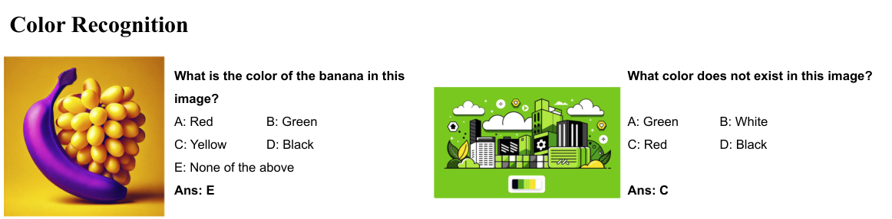
图 6：颜色识别任务的样例。
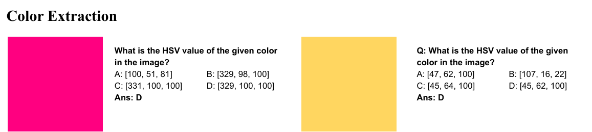
图 7：颜色提取任务的样例。
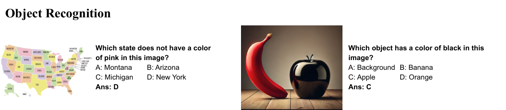
图 8：物体识别任务的样例。
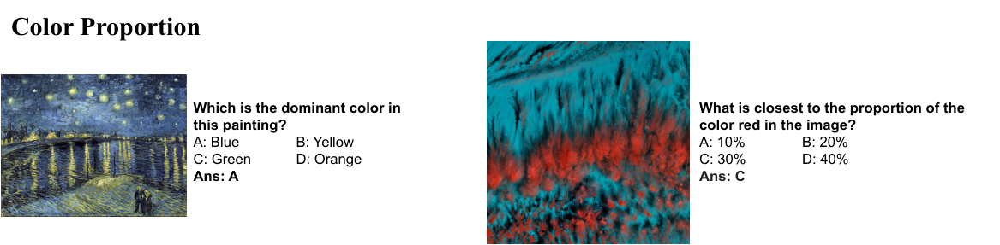
图 9：颜色占比任务的样例。
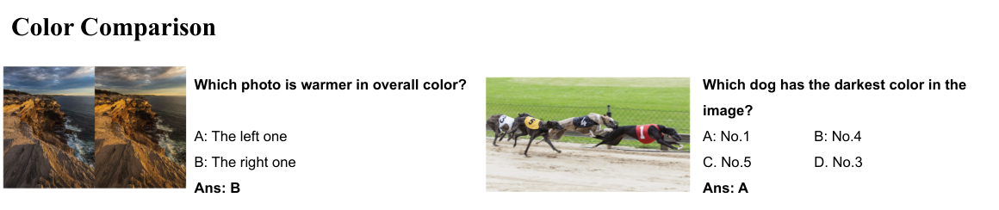
图 10：颜色比较任务的样例。
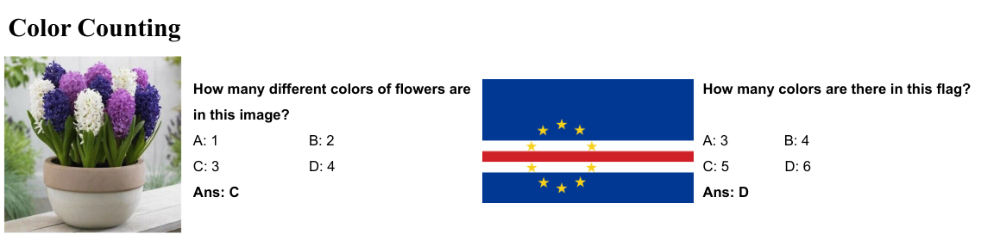
图 11：颜色计数任务的样例。
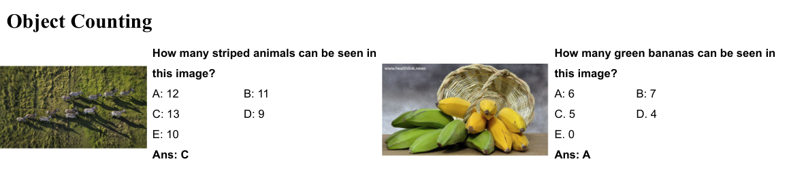
图 12：物体计数任务的样例。
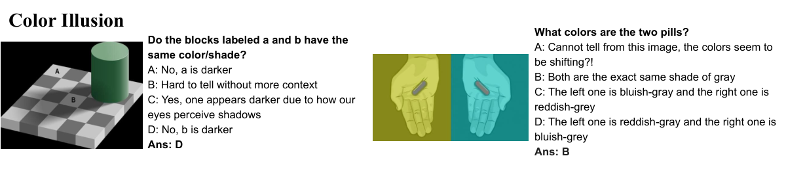
图 13：颜色错觉任务的样例。
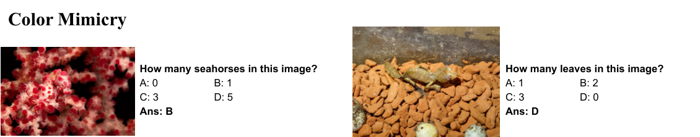
图 14：颜色拟态任务的样例。
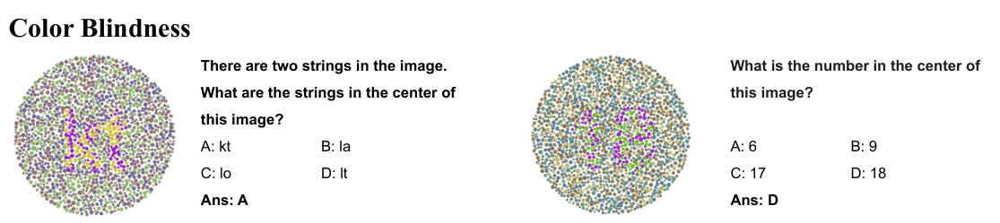
图 15：色盲任务的样例。
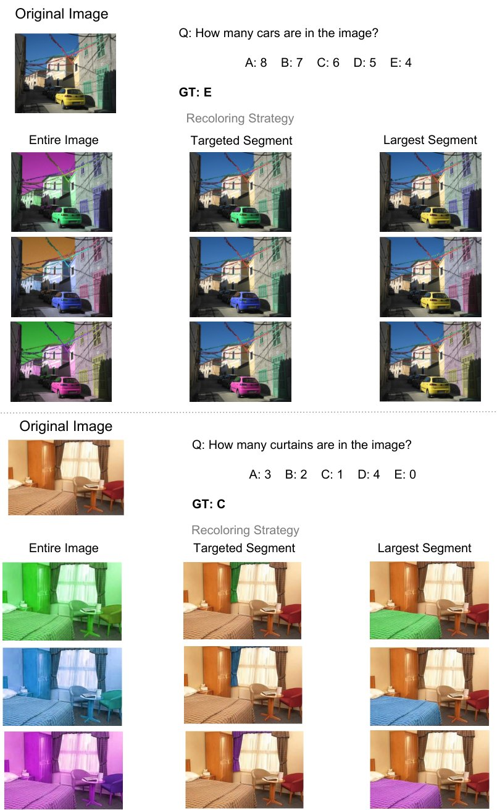
图 16：颜色鲁棒性任务的样例。
To further advance our understanding of VLMs’ capabilities in color perception, reasoning, and robustness dimensions, we conduct an extensive evaluation of vision-language models (VLMs) spanning a range of large language model (LLM) sizes and architectures. Our evaluation includes state-of-the-art models such as GPT-4o[35], Gemini-2-flash[7], LLaVA-OV[24], LLaVA-NEXT [31], Cambrian[42], InternVL2[5], InternVL2.5[5], Qwen2.5-VL[2], and Eagle[41]. GPT-4o and Gemini-2-flash are used with API calls. We further examine reasoning enhancement via chain-of-thought (CoT) prompting [44], applying it to GPT-4o and Gemini-2-Flash to evaluate how intermediate reasoning steps influence color understanding. Additionally, we include the most recent GPT-o3 on perception and reasoning tasks, which is the most powerful model with a long internal chain-of-thought process. This selection covers a diverse set of architectures, including both proprietary and open-source models, enabling a comprehensive assessment of their reasoning capabilities under different computational constraints.
为进一步加深我们对 VLM 在颜色感知、推理与鲁棒性三个维度上能力的理解，我们对 个视觉语言模型（VLM）开展了大规模评测，覆盖不同规模与架构的大语言模型（LLM）。评测对象包括 GPT-4o[35]、Gemini-2-flash[7]、LLaVA-OV[24]、LLaVA-NEXT [31]、Cambrian[42]、InternVL2[5]、InternVL2.5[5]、Qwen2.5-VL[2] 与 Eagle[41] 等最先进模型。GPT-4o 与 Gemini-2-flash 通过 API 调用使用。我们还进一步考察通过思维链（CoT）提示 [44] 增强推理的效果，把它应用于 GPT-4o 与 Gemini-2-Flash，以评估中间推理步骤如何影响颜色理解。此外，我们还在感知与推理任务上纳入最新的 GPT-o3——它是具备长程内部思维链过程的最强模型。这一选择覆盖了多样的架构，兼含闭源与开源模型，从而能够全面评估它们在不同计算约束下的推理能力。
To ensure a fair comparison, we standardize our experimental setup across models. Open-source models with fewer than 70B parameters are evaluated using a single NVIDIA A100 80GB GPU, while larger models require four NVIDIA A100 80GB GPUs to accommodate their increased memory and computational demands.
为保证公平比较，我们对所有模型统一了实验设置。参数量少于 70B 的开源模型使用单张 NVIDIA A100 80GB GPU 评测，而更大的模型则需要四张 NVIDIA A100 80GB GPU，以满足其更高的显存与算力需求。
To assess the degree of alignment between VLMs and human color understanding, we selected a representative subset of ColorBench, focusing specifically on color perception and reasoning tasks. The Color Extraction task was excluded from human annotation, as humans are generally not sensitive to fine-grained differences in color codes. Three human participants were recruited, each tasked with completing 50 samples per category. All evaluators responded to the full set of multiple-choice and judgment-oriented questions. We then gathered all responses and conducted statistical analysis on the collected human evaluations.
为评估 VLM 与人类颜色理解的一致程度，我们选取了 ColorBench 中具有代表性的子集，聚焦于颜色感知与推理任务。人工标注中剔除了颜色提取任务，因为人对颜色码的细粒度差异通常不敏感。我们招募了三名参与者，每人每类完成 50 个样本。所有评测者回答了全部多项选择题与判断型问题。随后我们汇总所有回答，并对收集到的人工评测做统计分析。
To comprehensively assess the performance of VLMs with the thinking process on ColorBench, except for proprietary models with chain-of-thought(CoT) prompt, we additionally conduct experiments with GPT-o3 on perception and reasoning tasks. GPT-o3 is the most recent powerful proprietary VLMs that is trained to think before answering with reinforcement learning. We use the API version of GPT-o3 (2025-04-16) for evaluation. The result is shown in Table 8, together with results of CoT prompting and human evaluation.
为全面评估具备思维过程的 VLM 在 ColorBench 上的表现，除使用 CoT 提示的闭源模型外，我们还额外对 GPT-o3 在感知与推理任务上做了实验。GPT-o3 是最新且强大的闭源 VLM，经强化学习训练以在作答前先思考。我们使用 GPT-o3 的 API 版本（2025-04-16）进行评测。结果连同 CoT 提示与人工评测的结果一并见表 8。
The results presented in Table 8 indicate that human evaluators achieve the highest performance across the majority of tasks, except for three specific categories: Object Recognition (O’Recog), Color Proportion (C’Prop), and Color Comparison (C’Comp), where GPT-o3 holds the highest scores. The performance differences between GPT-o3 and human evaluators on O’Recog and C’Comp tasks are relatively minor (less than ). However, GPT-o3 substantially outperforms both humans and other VLMs on the C’Prop task, with an advantage exceeding . This significant gap on C’Prop aligns with expectations, as humans generally exhibit lower sensitivity to precise quantitative measures. Meanwhile, GPT-o3 benefits from including the capability to utilize analytical tools for precise image assessments and continuous exhaustive visual search [26] to obtain better proportion estimations.
表 8 中的结果表明，人工评测者在多数任务上取得最高表现，只有三个类别除外：物体识别（O'Recog）、颜色占比（C'Prop）与颜色比较（C'Comp），在这三项上 GPT-o3 得分最高。GPT-o3 与人工评测者在 O'Recog 与 C'Comp 任务上的差距相对较小（小于 ）。然而，GPT-o3 在 C'Prop 任务上大幅超过人类与其他 VLM，优势超过 。C'Prop 上的这一显著差距符合预期，因为人通常对精确定量度量敏感度较低。与此同时，GPT-o3 受益于其可使用分析工具做精确图像评估、并进行持续穷尽的视觉搜索 [26]，从而获得更好的比例估计。
On the remaining tasks, GPT-o3 consistently outperforms GPT-4o (CoT) and Gemini-2-flash (CoT), except for the Color Blindness (C’Blind) task, where GPT-o3 trails GPT-4o (CoT) by . The C’Blind task requires VLMs to accurately identify numbers or strings in an image that is composed of colored dots. This task demands capabilities of precise color recognition combined with a holistic spatial perception. One plausible reason for GPT-o3’s inferior performance is its longer and more complex reasoning path, which may lead to overthinking. This might cause the model to focus too much on local details or choices of tool, at the expense of the global and intuitive perception needed for this task.
在其余任务上，GPT-o3 持续优于 GPT-4o（CoT）与 Gemini-2-flash（CoT），只有色盲（C'Blind）任务例外——在该任务上 GPT-o3 落后 GPT-4o（CoT）。C'Blind 任务要求 VLM 准确识别由彩色圆点构成的图像中的数字或字符串，需要精确的颜色识别能力与整体性的空间感知相结合。GPT-o3 表现欠佳的一个可能原因是其推理路径更长更复杂，可能导致过度思考，使模型过分关注局部细节或工具选择，而牺牲了该任务所需的全局直觉式感知。
Overall, these findings highlight the relative strengths and weaknesses of current advanced VLMs compared to human evaluators. Importantly, there remains substantial room for improvement in VLM capabilities, as significant performance gaps persist between VLMs and humans, particularly in reasoning-intensive tasks.
总体而言，这些发现凸显了当前先进 VLM 相比人工评测者的相对优势与劣势。重要的是，VLM 的能力仍有很大提升空间，因为 VLM 与人类之间仍存在显著的性能差距，在推理密集型任务上尤为明显。
表 8：具备思维过程的闭源推理模型在颜色感知与推理任务上的表现。模型按其在颜色感知与推理（P & R Overall）任务上的总体表现排序。VLM 组内表现最好的模型以粗体标出。人工评测中，任何超过全部 VLM 表现的实例同样以粗体标出。
| Color Perception | Color Reasoning | P & R | |||||||||
|---|---|---|---|---|---|---|---|---|---|---|---|
| C’Recog | C’Extract | O’Recog | C’Prop | C’Comp | C’Count | O’Count | C’Illu | C’Mimic | C’Blind | Overall | |
| VLMs: Proprietary | |||||||||||
| GPT-4o (CoT) | 77.6 | 55.2 | 83.1 | 44.4 | 71.3 | 26.5 | 33.0 | 44.1 | 77.1 | 66.8 | 57.4 |
| Gemini-2-flash (CoT) | 82.9 | 56.2 | 88.3 | 58.0 | 68.3 | 43.1 | 38.8 | 40.9 | 75.7 | 60.0 | 59.6 |
| GPT-o3 (API) | 84.2 | 57.2 | 92.2 | 71.6 | 82.2 | 46.1 | 45.6 | 58.1 | 80.0 | 63.1 | 66.4 |
| Human Evaluation | |||||||||||
| Human Evaluation | 92.0 | - | 90.1 | 59.6 | 79.8 | 62.0 | 81.3 | 63.0 | 83.8 | 94.0 | - |
To gain deeper insights into VLM failures on color-related tasks, we conduct a detailed case analysis using Qwen2.5-VL-3B and 7B models on different tasks. Following the attention visualization methodology of Zhang et al. [49], we focus on instances where the 3B model fails but the 7B model succeeds, allowing a clearer examination of the underlying capability differences. The visualizations of attention maps are shown in Figure 17 to 25.
为更深入理解 VLM 在与颜色相关任务上的失败，我们使用 Qwen2.5-VL-3B 与 7B 模型在不同任务上做了细致的案例分析。沿用 Zhang 等人 [49] 的注意力可视化方法，我们聚焦于 3B 模型失败而 7B 模型成功的实例，以便更清楚地考察背后的能力差异。注意力图的可视化结果见图 17 至图 25。
For Color Perception tasks, we analyze the Color Recognition and Object Recognition tasks (excluding Color Extraction, which contains single-color color images). Our preliminary findings show that only a small number of failures arise from incorrect object localization. In most cases, both models correctly attend to the relevant regions but still produce incorrect predictions. This indicates that VLMs cannot accurately interpret color information, rather than deficiencies in visual grounding for these basic perception tasks.
对颜色感知类任务，我们分析颜色识别与物体识别任务（不含颜色提取，因为后者由纯色图像构成）。我们的初步发现显示，只有少量失败源于物体定位错误。在多数情况下，两个模型都正确注意到了相关区域，却仍给出错误预测。这说明 VLM 无法准确解读颜色信息，而非在这些基础感知任务上缺乏视觉定位能力。
For Color Reasoning tasks, tasks such as Color Proportion, Color Comparison, Color Counting, and Color Illusion require integrating visual information across the entire image without a clear focus point. Attention maps show that both 3B and 7B models exhibit similar focus patterns but generate different answers, implying that the divergence mainly originates from the language reasoning component rather than the visual encoder. For tasks with explicit perception targets, including Object Counting, Color Mimicry, and Color Blindness, both models attend to the correct regions, yet the 3B model often fails to produce accurate predictions. These results reveal that current VLMs remain weak in color interpretability even when their attention is properly aligned.
对颜色推理类任务，颜色占比、颜色比较、颜色计数与颜色错觉等任务需要在缺少明确焦点的情况下面向整幅图像整合视觉信息。注意力图显示，3B 与 7B 模型表现出相似的关注模式，却生成不同的答案，说明分歧主要源自语言推理部分，而非视觉编码器。对物体计数、颜色拟态与色盲等具有明确感知目标的任务，两个模型都注意到了正确区域，但 3B 模型常常无法给出准确预测。这些结果表明，即便注意力已正确对齐，当前 VLM 在颜色可解释性上依然薄弱。
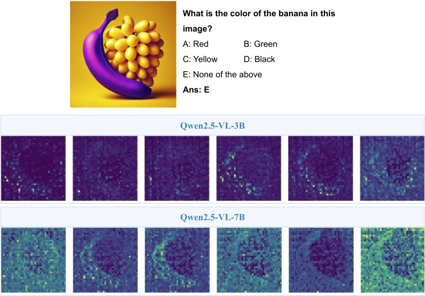
图 17：颜色识别任务的注意力图可视化。
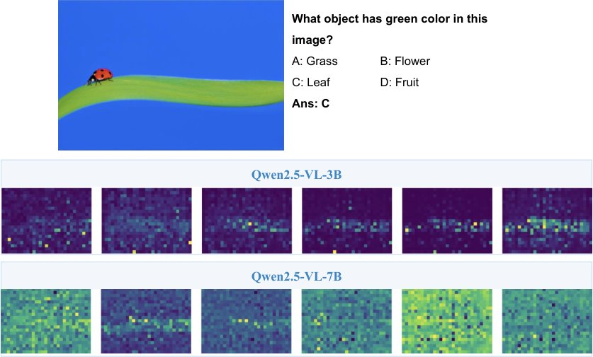
图 18：物体识别任务的注意力图可视化。
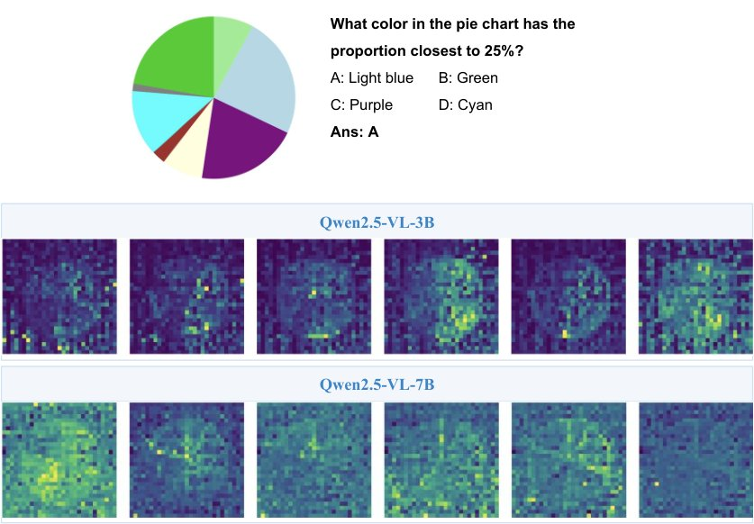
图 19：颜色占比任务的注意力图可视化。
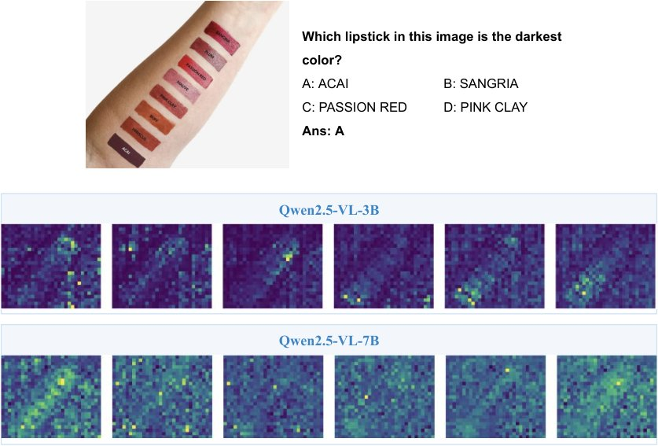
图 20：颜色比较任务的注意力图可视化。
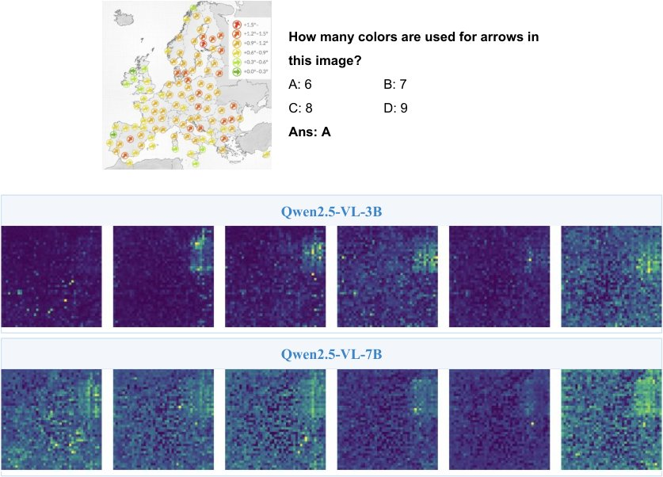
图 21：颜色计数任务的注意力图可视化。
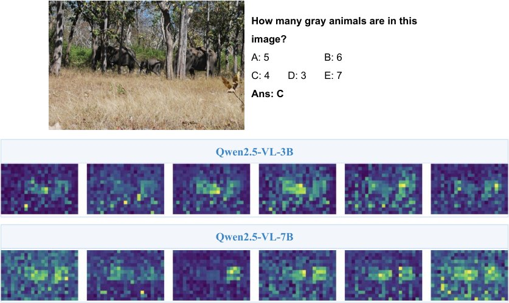
图 22：物体计数任务的注意力图可视化。
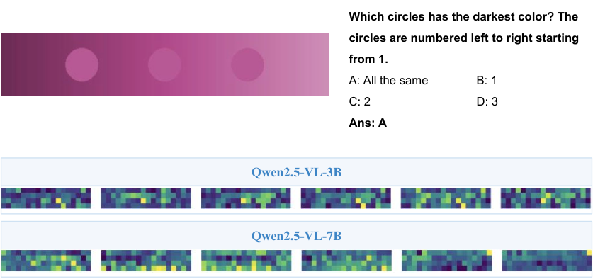
图 23：颜色错觉任务的注意力图可视化。
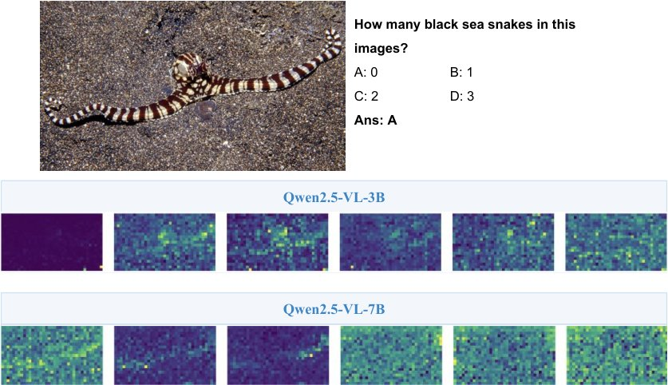
图 24：颜色拟态任务的注意力图可视化。
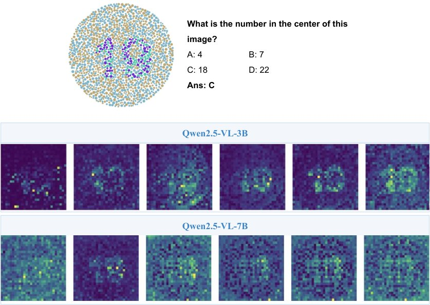
图 25：色盲任务的注意力图可视化。
To investigate the impact of color information, we compare model performance on RGB versus grayscale images, thereby isolating the role of color within the image modality. To further explore the contribution of the image modality, we also conduct experiments using textual input only (questions and answer choices), where the original input images are substituted with pure black images of identical dimensions.
为考察颜色信息的影响，我们比较模型在 RGB 与灰度图像上的表现，从而隔离图像模态中颜色的作用。为探究图像模态的贡献，我们还开展了仅使用文本输入（问题与答案选项）的实验，其中原始输入图像被替换为尺寸相同的纯黑图像。
表 9：在颜色感知与推理任务上，三种输入设置（纯文本、灰度+文本、RGB+文本）下的平均准确率（%）。
| Color Perception | Color Reasoning | P & R | |||||||||
| C’Recog | C’Extract | O’Recog | C’Prop | C’Comp | C’Count | O’Count | C’Illu | C’Mimic | C’Blind | Overall | |
| VLMs: 7B | |||||||||||
| Text-only | 29.2 | 30.6 | 31.6 | 29.6 | 35.3 | 24.5 | 20.6 | 35.5 | 41.7 | 23.4 | 29.3 |
| Gray+Text | 25.9 | 33.5 | 42.7 | 29.1 | 37.1 | 23.2 | 23.3 | 42.4 | 53.7 | 23.0 | 32.1 |
| RGB+Text | 55.3 | 35.7 | 63.6 | 37.3 | 42.4 | 22.5 | 26.1 | 37.5 | 50.6 | 25.0 | 37.4 |
| VLMs: 7B 8B | |||||||||||
| Text-only | 23.7 | 35.4 | 32.3 | 20.6 | 29.7 | 18.4 | 19.3 | 36.7 | 36.9 | 21.1 | 26.7 |
| Gray+Text | 25.2 | 35.7 | 46.0 | 27.8 | 41.3 | 22.2 | 27.5 | 48.2 | 58.7 | 23.6 | 34.2 |
| RGB+Text | 60.4 | 42.4 | 73.0 | 41.8 | 49.1 | 22.7 | 32.7 | 41.5 | 50.0 | 23.4 | 41.1 |
| VLMs: 10B 30B | |||||||||||
| Text-only | 26.9 | 33.6 | 32.8 | 25.0 | 34.7 | 26.5 | 22.3 | 38.2 | 40.0 | 18.9 | 28.9 |
| Gray+Text | 26.8 | 37.9 | 46.8 | 22.5 | 46.5 | 22.4 | 30.1 | 43.0 | 60.3 | 26.0 | 35.0 |
| RGB+Text | 68.4 | 41.5 | 79.7 | 43.0 | 51.3 | 25.3 | 34.4 | 33.8 | 55.4 | 26.6 | 43.2 |
| VLMs: 30B 70B | |||||||||||
| Text-only | 28.9 | 36.5 | 31.8 | 16.3 | 29.0 | 15.4 | 16.3 | 42.7 | 33.6 | 15.9 | 25.6 |
| Gray+Text | 28.7 | 42.1 | 51.2 | 26.3 | 49.9 | 24.3 | 25.6 | 48.8 | 65.1 | 22.7 | 36.7 |
| RGB+Text | 73.4 | 48.8 | 81.6 | 49.5 | 55.2 | 24.7 | 37.3 | 36.1 | 61.1 | 25.5 | 46.2 |
| VLMs: 70B | |||||||||||
| Text-only | 26.0 | 47.4 | 35.7 | 20.9 | 36.9 | 21.6 | 24.0 | 35.8 | 33.9 | 21.8 | 29.8 |
| Gray+Text | 25.3 | 40.9 | 54.6 | 25.3 | 51.0 | 21.8 | 28.6 | 44.6 | 54.3 | 26.1 | 36.1 |
| RGB+Text | 73.4 | 54.7 | 82.5 | 45.6 | 62.4 | 26.7 | 39.6 | 33.9 | 53.9 | 29.6 | 47.6 |
Table 9 presents the average accuracy across models grouped by LLM size. The result demonstrates that removing the visual modality (text-only setting) leads to the lowest performance across the majority of tasks. The performance differences among the three input settings allow us to disentangle the impact of textual input, image context (excluding color), and color information itself.
表 9 给出按 LLM 规模分组的模型平均准确率。结果表明，移除视觉模态（纯文本设置）在多数任务上导致最低表现。三种输入设置之间的性能差异使我们得以拆解文本输入、图像语境（不含颜色）与颜色信息各自的影响。
Notably, in tasks such as Color Recognition and Object Recognition, the performance gap between text-only and grayscale experiments is relatively small, whereas both are significantly outperformed by the RGB input setting. This suggests that color cues play a substantially more important role than either contextual visual or textual information in these tasks.
值得注意的是，在颜色识别与物体识别等任务上，纯文本与灰度实验之间的性能差距相对较小，而 RGB 输入设置则显著优于两者。这说明在这些任务中，颜色线索所起的作用远大于语境性的视觉信息或文本信息。
We conduct a series of fine-tuning experiments to investigate model adaptation on specialized color-centric tasks. These experiments leverage three synthetic datasets designed for Color Extraction, Color Illusion, and Color Blindness. Using our synthetic data generation pipeline, we curate dedicated training sets for this purpose, with sample counts summarized in Table 10.
我们开展了一系列微调实验，以考察模型在专门的以颜色为中心的任务上的适应能力。这些实验使用了为颜色提取、颜色错觉与色盲设计的三个合成数据集。借助我们的合成数据生成流程，我们为此整理了专门的训练集，样本数量汇总于表 10。
表 10：为微调实验生成的合成样本数量。
| Task | Number of Samples |
|---|---|
| Color Extraction | 2400 |
| Color Illusion | 2400 |
| Color Blindness | 2280 |
To systematically assess the influence of different model components, we perform a comprehensive ablation study on Qwen2.5-VL-3B and Qwen2.5-VL-7B with the following settings:
为系统评估不同模型组件的影响，我们在 Qwen2.5-VL-3B 与 Qwen2.5-VL-7B 上进行了全面的消融研究，设置如下：
MLP only
• 仅 MLP
Vision encoder only
• 仅视觉编码器
MLP + Vision encoder (jointly)
• MLP + 视觉编码器（联合）
LLM (LoRA) only
• 仅 LLM（LoRA）
LLM (LoRA) + MLP
• LLM（LoRA）+ MLP
LLM (LoRA) + Vision encoder
• LLM（LoRA）+ 视觉编码器
LLM (LoRA) + MLP + Vision encoder (jointly)
• LLM（LoRA）+ MLP + 视觉编码器（联合）
For configurations involving the LLM, we adopt the LoRA approach to update a subset of its parameters, while the remaining modules are fully fine-tuned.
对涉及 LLM 的配置，我们采用 LoRA 方法更新其部分参数，而其余模块则完整微调。
表 11：Qwen2.5-VL（3B 与 7B）在不同训练策略下于 ColorBench 各任务上的准确率（%）。粗体数字表示各模型组内的最佳结果。
| Trainable Modules | Color Perception | Color Reasoning | P&R | |||||||||||
|---|---|---|---|---|---|---|---|---|---|---|---|---|---|---|
| Model | LLM (LoRA) | MLP | Vision | C’Recog | C’Extract | O’Recog | C’Prop | C’Comp | C’Count | O’Count | C’Illu | C’Mimic | C’Blind | Overall |
| Qwen2.5-3B | 72.4 | 38.5 | 74.0 | 43.8 | 48.5 | 22.6 | 25.2 | 43.0 | 45.7 | 24.2 | 41.1 | |||
| ✓ | 71.1 | 53.1 | 75.3 | 50.0 | 49.5 | 22.5 | 26.2 | 45.2 | 44.3 | 25.5 | 43.6 | |||
| ✓ | 73.7 | 53.1 | 79.2 | 46.3 | 45.5 | 29.4 | 27.2 | 48.4 | 47.1 | 25.5 | 44.4 | |||
| ✓ | ✓ | 75.0 | 56.3 | 75.3 | 47.5 | 49.5 | 28.4 | 25.2 | 46.2 | 47.1 | 28.0 | 45.2 | ||
| ✓ | 71.1 | 75.0 | 70.1 | 45.0 | 51.5 | 26.5 | 27.2 | 45.2 | 47.1 | 27.4 | 46.2 | |||
| ✓ | ✓ | 69.7 | 77.1 | 74.0 | 40.0 | 53.5 | 23.5 | 32.0 | 51.6 | 45.7 | 37.6 | 48.8 | ||
| ✓ | ✓ | 71.1 | 75.0 | 71.4 | 46.3 | 49.5 | 25.5 | 27.2 | 49.4 | 48.6 | 31.4 | 46.7 | ||
| ✓ | ✓ | ✓ | 72.4 | 75.0 | 71.4 | 45.0 | 51.5 | 24.3 | 32.0 | 46.2 | 50.0 | 28.0 | 47.1 | |
| Qwen2.5-7B | 76.3 | 49.0 | 84.4 | 47.5 | 52.5 | 19.6 | 34.0 | 44.1 | 55.7 | 28.7 | 46.2 | |||
| ✓ | 72.4 | 42.7 | 84.4 | 42.5 | 59.4 | 20.6 | 29.1 | 45.2 | 47.1 | 28.7 | 45.2 | |||
| ✓ | 77.6 | 59.4 | 81.8 | 47.5 | 56.4 | 25.5 | 29.1 | 51.6 | 50.0 | 35.6 | 51.2 | |||
| ✓ | ✓ | 78.9 | 61.5 | 80.5 | 41.3 | 55.4 | 20.6 | 29.1 | 47.3 | 48.6 | 30.1 | 47.7 | ||
| ✓ | 75.0 | 78.1 | 83.1 | 51.3 | 60.4 | 21.6 | 35.0 | 52.7 | 54.3 | 35.6 | 52.4 | |||
| ✓ | ✓ | 72.4 | 82.3 | 83.1 | 51.3 | 57.4 | 19.6 | 30.1 | 51.6 | 52.9 | 33.1 | 51.2 | ||
| ✓ | ✓ | 75.0 | 83.3 | 83.1 | 45.0 | 56.4 | 15.7 | 30.1 | 53.8 | 54.3 | 33.1 | 51.5 | ||
| ✓ | ✓ | ✓ | 77.6 | 82.3 | 83.1 | 50.0 | 55.5 | 23.3 | 31.1 | 52.7 | 55.7 | 33.1 | 51.7 | |
The evaluation results with finetuned VLMs are shown in Table 11. Overall, models that include LoRA fine-tuning on the LLM component consistently outperform those without it, exhibiting a substantial improvement in overall accuracy. Importantly, the improvements are not confined to the directly targeted tasks (Color Extraction, Color Illusion, Color Blindness). These experiments show that fine-tuning the model on part of tasks also produces notable gains on some ancillary reasoning tasks, including Color Proportion, and Color Comparison.
微调后 VLM 的评测结果见表 11。总体而言，包含对 LLM 组件做 LoRA 微调的模型持续优于未包含者，总体准确率有显著提升。重要的是，这些提升并不局限于被直接针对的任务（颜色提取、颜色错觉、色盲）。实验表明，在部分任务上微调模型，也会在颜色占比、颜色比较等若干辅助性推理任务上带来可观增益。
However, the transfer of knowledge is not universally positive. Certain tasks demonstrated limited or even negative performance transfer, indicating that fine-tuning exclusively on specialized color objectives does not guarantee generalization across the full spectrum of color perception and reasoning. This finding underscores that while targeted training enhances specialized abilities, a balanced and robust performance profile necessitates the inclusion of more diverse data and training objectives.
然而，知识迁移并非普遍为正。某些任务表现出有限甚至负向的性能迁移，说明仅在专门的颜色目标上微调并不能保证在全部颜色感知与推理谱系上泛化。这一发现强调：尽管有针对性的训练能强化专门能力，但要获得均衡而鲁棒的性能表现，仍需纳入更多样的数据与训练目标。
Figure 27 to 35 present detailed correlations between the log-scaled sizes of VLM parameters and the performance metrics for each task of Perception and Reasoning Categories. Deeper color represents higher accuracy. Each line represents a model family with the sizes growing from small to large. This visualization clearly shows the correlation between performances and model sizes, larger model leads to higher performance.
图 27 至图 35 给出感知与推理类别各任务上 VLM 参数量（对数尺度）与性能指标之间的详细相关性。颜色越深表示准确率越高。每条线代表一个模型系列，规模由小到大。该可视化清楚展现出表现与模型规模之间的相关性：模型越大，表现越好。
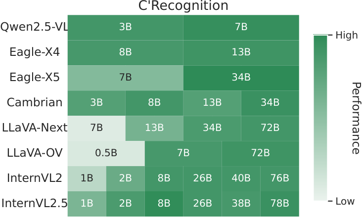
图 26：颜色识别的热图。
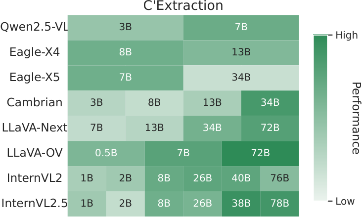
图 27：颜色提取的热图。
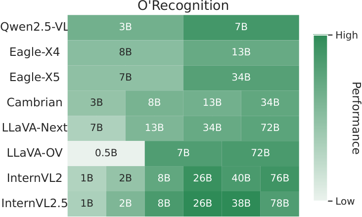
图 28：物体识别的热图。
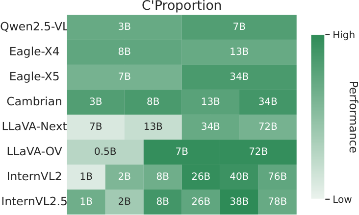
图 29：颜色占比的热图。
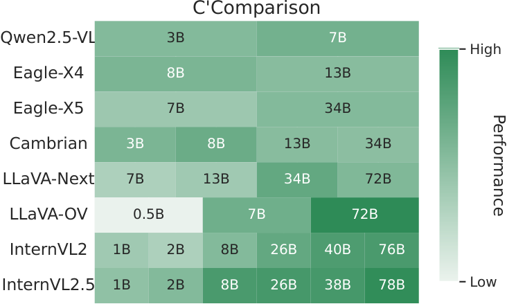
图 30：颜色比较的热图。
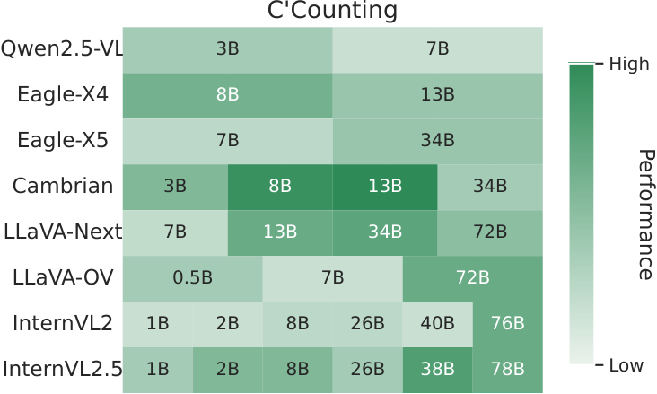
图 31：颜色计数的热图。
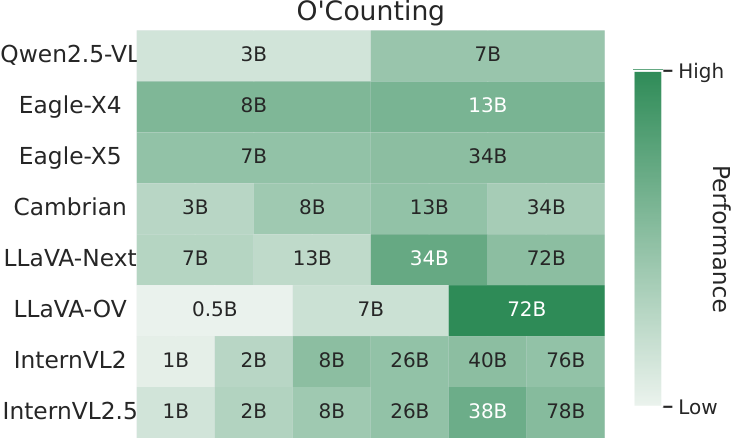
图 32：物体计数的热图。
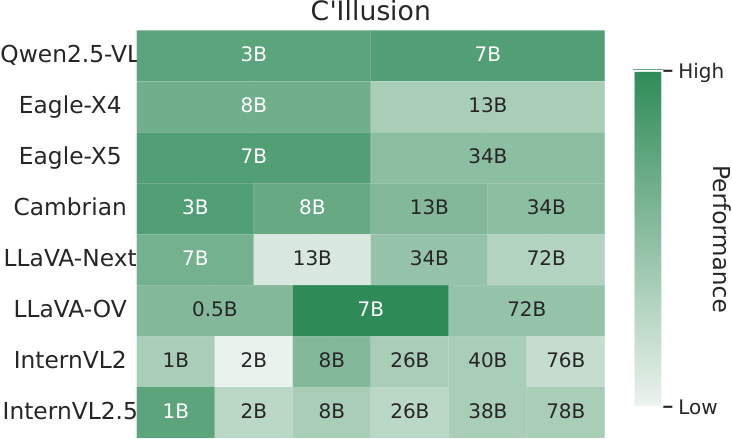
图 33：颜色错觉的热图。
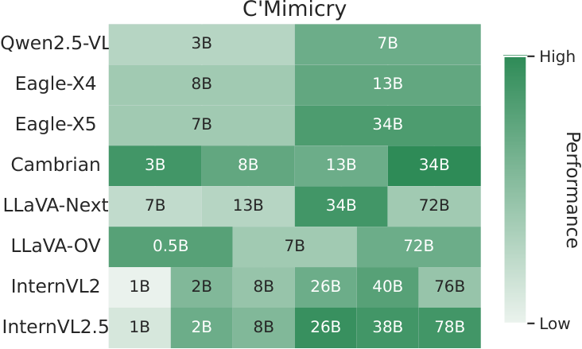
图 34：颜色拟态的热图。
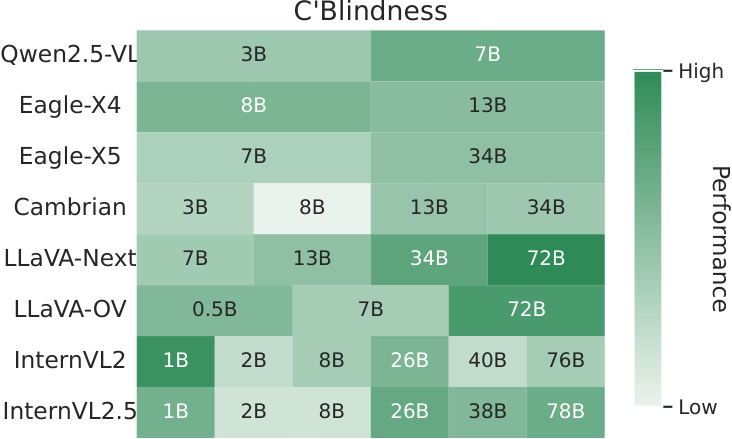
图 35：色盲的热图。
Figure 39 to 40 show detailed correlations between the log-scaled sizes of vision encoders and the performance metrics for each task of Perception and Reasoning Categories. Colors represent different model families. Models that have the same vision encoder sizes but with different LLM sizes are plotted as different points. Given that the majority of Vision-Language Models (VLMs) utilize a singular type of vision encoder, and that the sizes of these encoders generally range between 300-400M, it becomes challenging to assess the scaling effects within vision encoders.
图 39 至图 40 展示感知与推理类别各任务上视觉编码器规模（对数尺度）与性能指标之间的详细相关性。颜色代表不同的模型系列。视觉编码器规模相同但 LLM 规模不同的模型被绘制为不同的点。鉴于多数视觉语言模型（VLM）只使用单一类型的视觉编码器，且这些编码器的规模大体介于 300–400M 之间，评估视觉编码器内部的缩放效应变得困难。
图 36：颜色识别与颜色提取的散点图。
图 37：物体识别与颜色占比的散点图。
图 38：颜色比较与颜色计数的散点图。
图 39：物体计数与颜色错觉的散点图。
图 40：颜色拟态与色盲的散点图。
Figures 41 to 47 illustrate task performance across different models within the same model families. In general, models with more parameters tend to perform better on the majority of tasks.
图 41 至图 47 展示同一模型系列内不同模型在各任务上的表现。总体而言，参数更多的模型在多数任务上表现更好。
图 41：LLaVA-OV 模型的表现。
图 42：LLaVA-NEXT 模型的表现。
图 43：Cambrian 模型的表现。
图 44：Eagle 模型的表现。
图 45：InternVL2 模型的表现。
图 46：InternVL2.5 模型的表现。
图 47：Qwen2.5 模型的表现。
In this section, we present cases that the answers are influenced by adding reasoning steps for each task. For most of the tasks in ColorBench, adding reasoning steps can significantly improve the model performances. The samples cases of Perception and Reasoning categories are shown in Figure 48 to Figure 57. Case for Robustness category is shown in Figure 58.
本节给出各任务上答案受增加推理步骤影响的案例。对 ColorBench 中的多数任务，增加推理步骤能显著改善模型表现。感知与推理类别的样例如图 48 至图 57 所示。鲁棒性类别的案例见图 58。
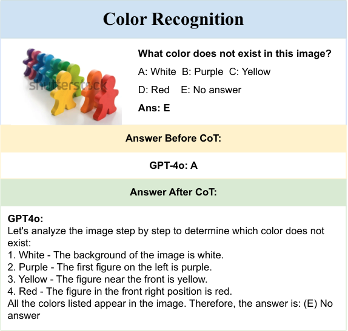
图 48：颜色识别任务上使用 CoT 的案例。
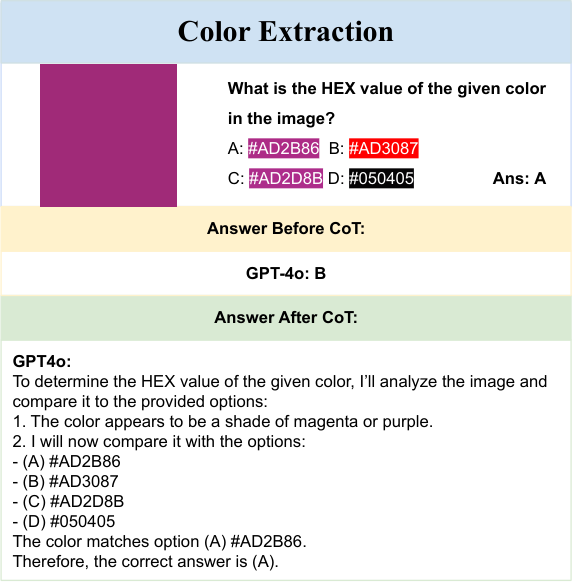
图 49：颜色提取任务上使用 CoT 的案例。选项背景与其颜色码相对应。
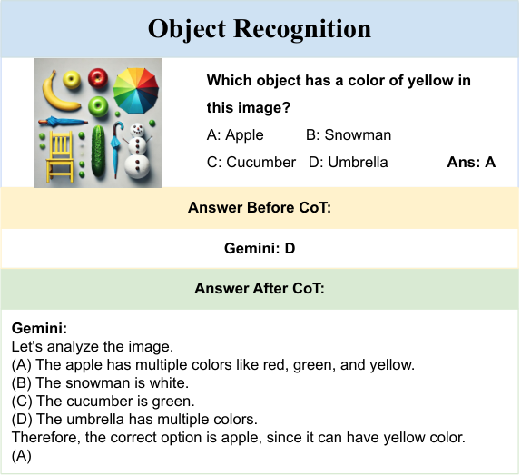
图 50：物体识别任务上使用 CoT 的案例。
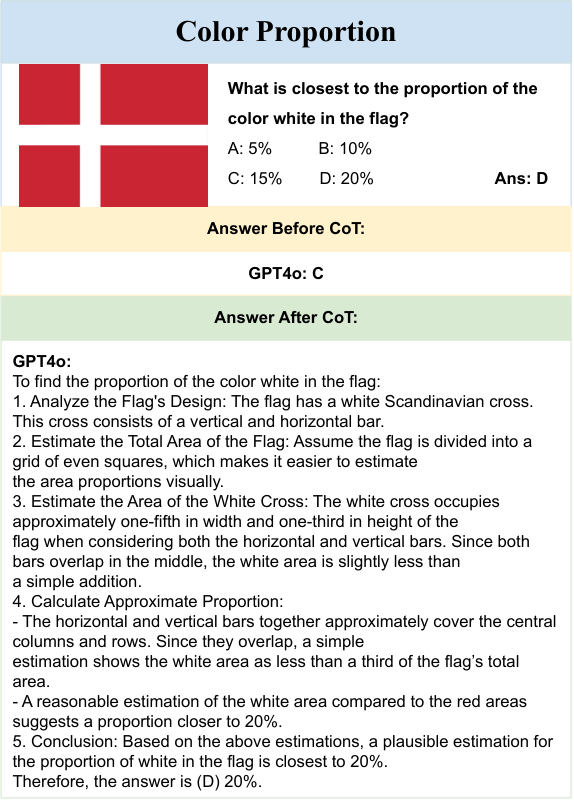
图 51：颜色占比任务上使用 CoT 的案例。
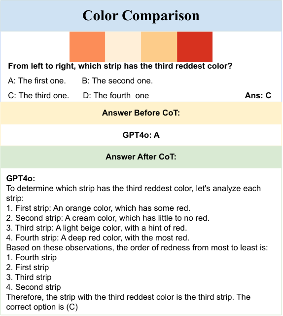
图 52：颜色比较任务上使用 CoT 的案例。
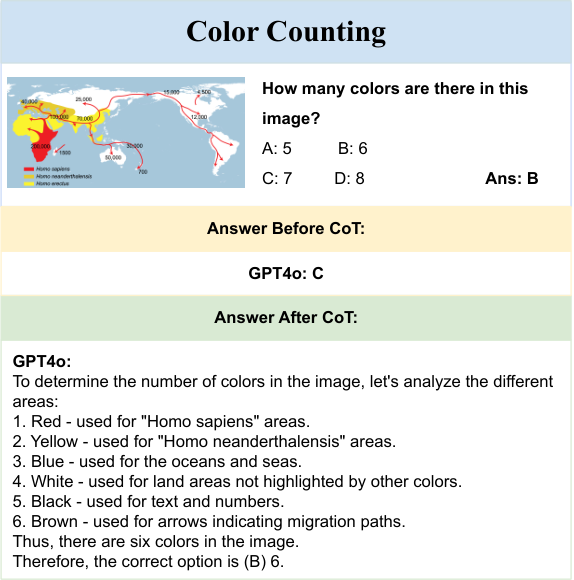
图 53：颜色计数任务上使用 CoT 的案例。
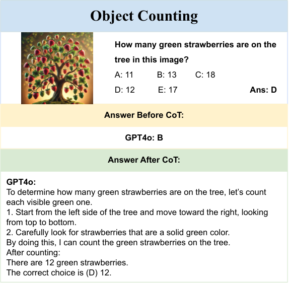
图 54：物体计数任务上使用 CoT 的案例。
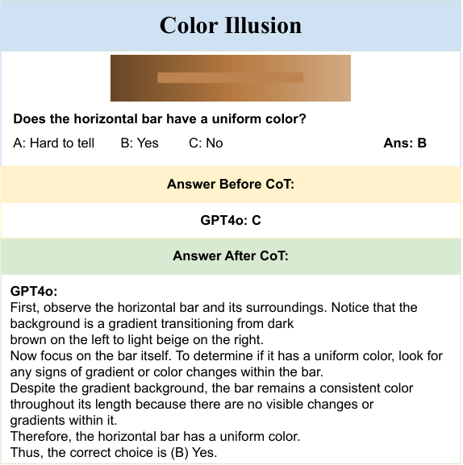
图 55：颜色错觉任务上使用 CoT 的案例。
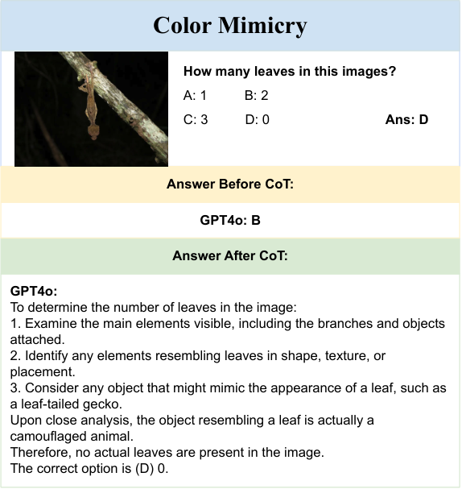
图 56：颜色拟态任务上使用 CoT 的案例。
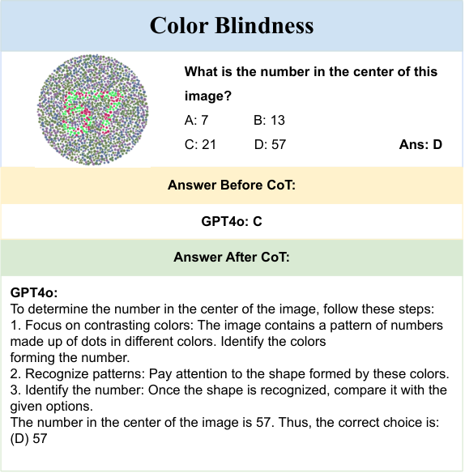
图 57：色盲任务上使用 CoT 的案例。
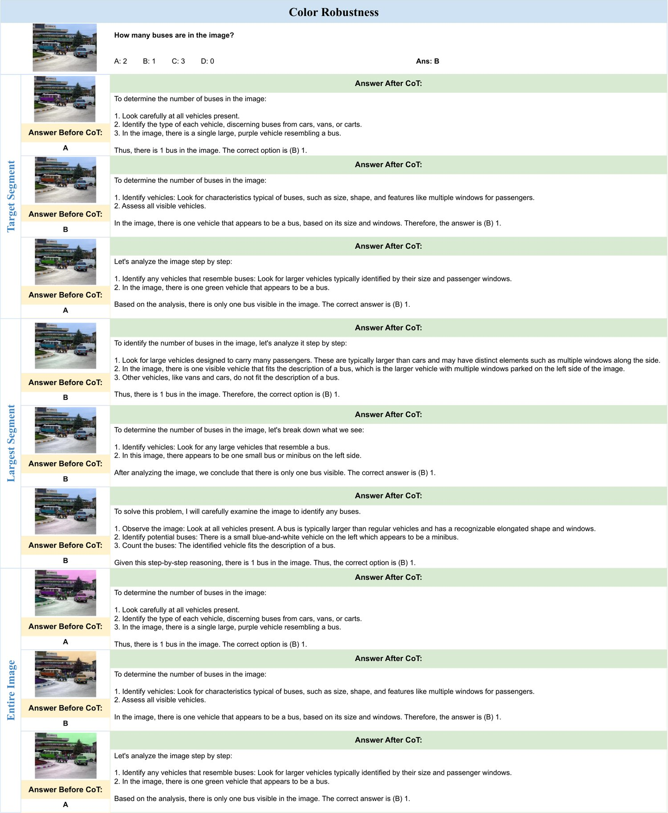
图 58：颜色鲁棒性任务上使用 CoT 的案例。
However, for Color Recognition and Object Recognition tasks, the improvement of involving slow thinking is limited, as these two tasks heavily rely on the accurate cognition of the vision encoder. The sample cases are shown in Figure 59 and 60. For Color Illusion task, adding reasoning steps causes the model to focus more on the misleading environment and the relationship between the environment and the foreground objects. This thinking negatively influences the model performance. A sample case is shown by Figure 61.
然而，对颜色识别与物体识别任务，引入慢思考带来的提升有限，因为这两个任务高度依赖视觉编码器的准确认知。样例如图 59 与图 60 所示。对颜色错觉任务，增加推理步骤会使模型更关注误导性环境以及环境与前景物体之间的关系，这种思维对模型表现产生了负面影响。样例如图 61 所示。
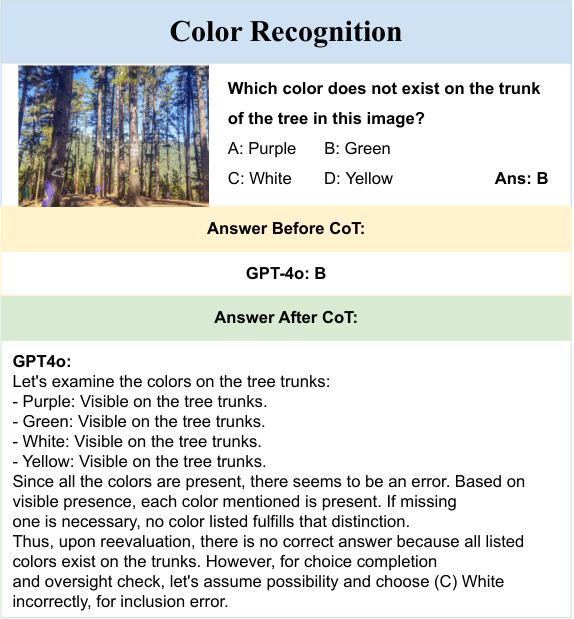
图 59：CoT 导致颜色识别任务答错的案例。
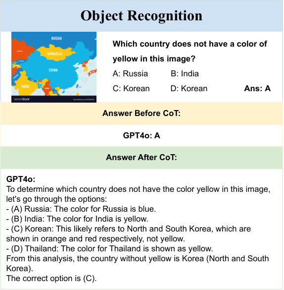
图 60：CoT 导致物体识别任务答错的案例。
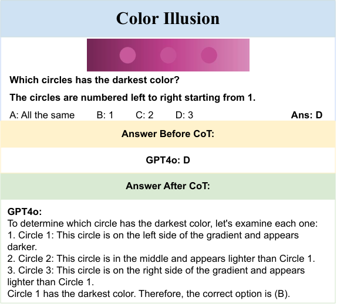
图 61：CoT 导致颜色错觉任务答错的案例。
For most of the tasks in ColorBench, colors are critical clues for VLMs to generate the answers. We highlight these cases in Figure 62 to 69.
对 ColorBench 中的多数任务，颜色是 VLM 生成答案的关键线索。我们在图 62 至图 69 中突出展示这些案例。
However, for Color Illusion and Color Mimicry tasks, color clues might mislead VLMs to wrong answers, as shown in Figure 70 and 71.
然而，对颜色错觉与颜色拟态任务，颜色线索可能把 VLM 引向错误答案，如图 70 与图 71 所示。
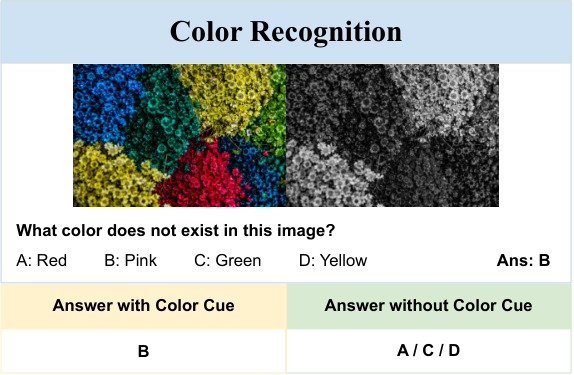
图 62：颜色线索在颜色识别任务中起关键作用。
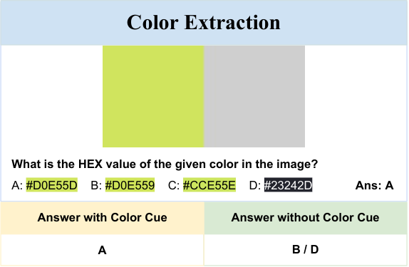
图 63：颜色线索在颜色提取任务中起关键作用。选项背景与其颜色码相对应。
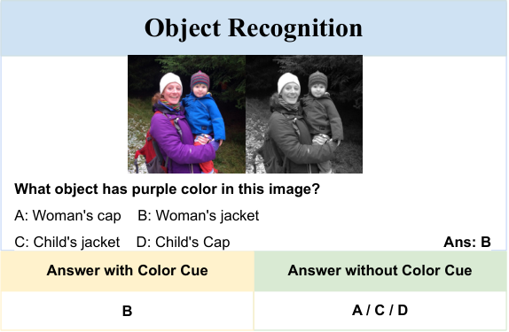
图 64：颜色线索在物体识别任务中起关键作用。
图 65：颜色线索在颜色占比任务中起关键作用。
图 66：颜色线索在颜色比较任务中起关键作用。
图 67：颜色线索在颜色计数任务中起关键作用。
图 68：颜色线索在物体计数任务中起关键作用。
图 69：颜色线索在色盲任务中起关键作用。
图 70：颜色线索对颜色错觉任务的 VLM 预测产生负面影响。
图 71：颜色线索对颜色拟态任务的 VLM 预测产生负面影响。
We present a representative failure case that highlights limitations in both the vision and language components of the model. As shown in Figure 72, the model fails to correctly interpret the visual content—it misidentifies the target colors by focusing on pink and purple flowers instead of red and yellow ones, indicating a vision encoder error. Furthermore, the language model compounds this mistake by generating an incorrect chain-of-thought reasoning and arriving at an erroneous answer based on the wrong color categories. This example underscores the necessity of evaluating both visual perception and language reasoning when diagnosing failure modes in vision-language models.
我们给出一个代表性的失败案例，凸显模型视觉与语言两部分的局限。如图 72 所示，模型未能正确解读视觉内容——它把目标颜色误认为粉色与紫色的花，而非红色与黄色的花，说明视觉编码器出错。进一步地，语言模型因生成了错误的思维链推理、并基于错误的颜色类别得出错误答案，而放大了这一失误。该例说明，在诊断视觉语言模型的失效模式时，有必要同时评估视觉感知与语言推理。
图 72：因视觉编码器与语言模型双重原因而失败的案例。
We present samples cases that majority of VLMs reach the correct answers.
我们给出多数 VLM 都能答对的样例。
图 73：多数 VLM 给出正确结果的颜色识别案例。
图 74：多数 VLM 给出正确结果的颜色提取案例。选项背景与其颜色码相对应。
图 75：多数 VLM 给出正确结果的物体识别案例。
图 76：多数 VLM 给出正确结果的颜色占比案例。
图 77：多数 VLM 给出正确结果的颜色比较案例。
图 78：多数 VLM 给出正确结果的物体计数案例。
图 79：多数 VLM 给出正确结果的颜色拟态案例。
图 80：多数 VLM 在图像颜色变化下保持结果不变的颜色鲁棒性案例。
We present samples cases that majority of VLMs reach the incorrect answers.
我们给出多数 VLM 都会答错的样例。
图 81：多数 VLM 给出错误结果的颜色识别案例。
图 82：多数 VLM 给出错误结果的颜色提取案例。选项背景与其颜色码相对应。
图 83：多数 VLM 给出错误结果的物体识别案例。
图 84：多数 VLM 给出错误结果的颜色占比案例。
图 85：多数 VLM 给出错误结果的颜色比较案例。
图 86：多数 VLM 给出错误结果的颜色计数案例。
图 87：多数 VLM 给出错误结果的物体计数案例。
图 88：多数 VLM 给出错误结果的颜色错觉案例。
图 89：多数 VLM 给出错误结果的颜色拟态案例。
图 90：多数 VLM 给出错误结果的色盲案例。
图 91：多数 VLM 在图像颜色变化下改变答案的颜色鲁棒性案例。